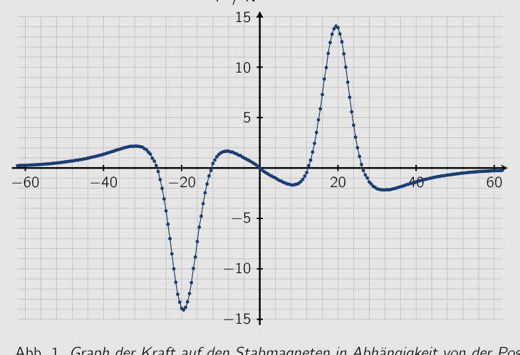
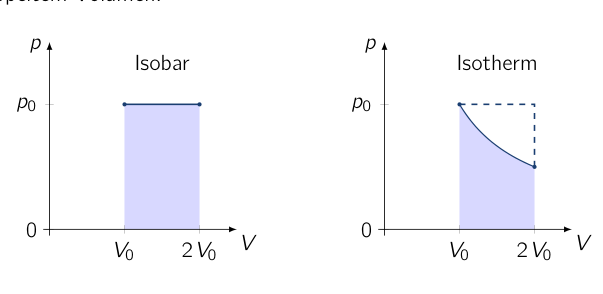
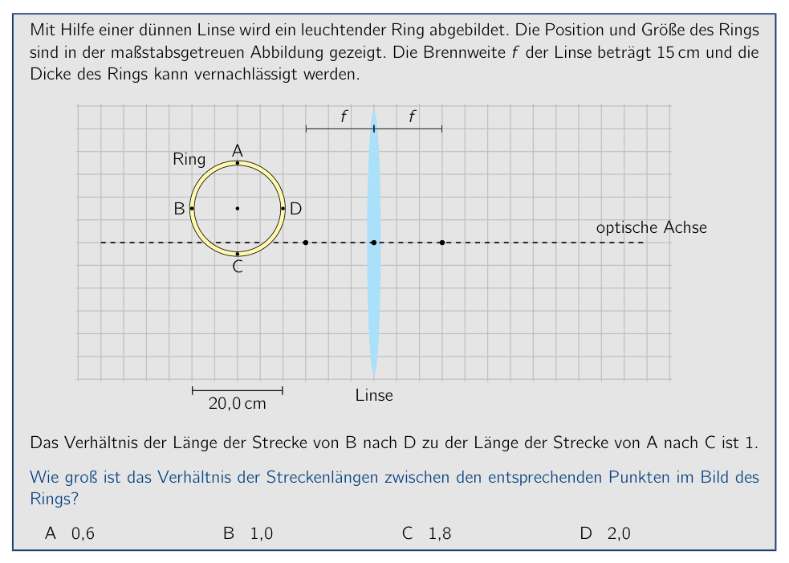
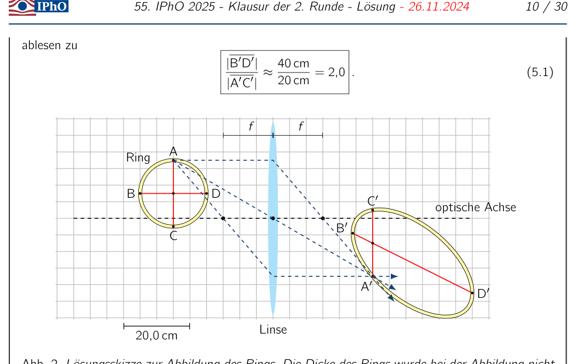
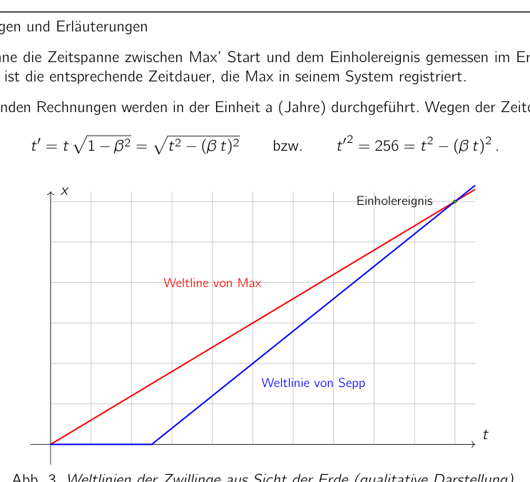
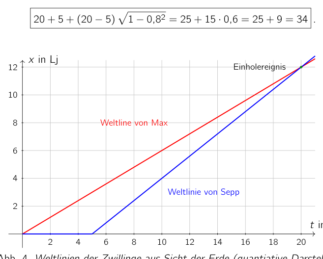
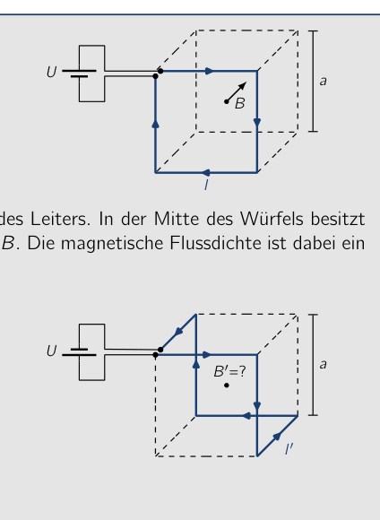
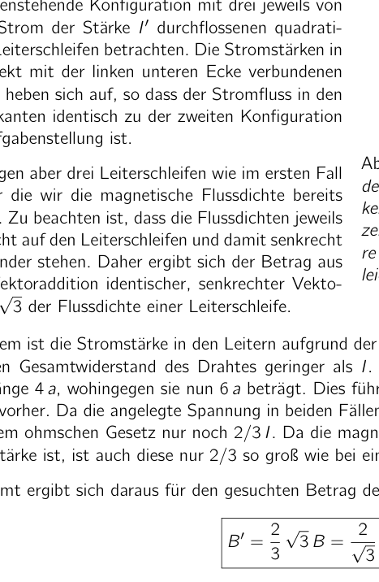

Problem 1 Charged Spheres (MC problem) (5.0 pts.) (Problem group of the PhysicsOlympiad - Stefan Petersen) Of the three equally sized metal spheres shown, sphere A is charged with a charge . Spheres B and C are initially uncharged. First, the two spheres A and B are brought into conducting contact and then separated again. A B C The same is then done in turn with spheres A and C and finally with spheres B and C. You may assume that only the two spheres brought into contact at any given time influence each other, while the third is at a large distance. What charge does sphere C carry at the end? A B C D Solution Calculations and explanations At each contact, charge equalization takes place between the conducting metal spheres. The following table shows the resulting charges of the spheres after each charge redistribution. Contact Charge of sphere A Charge of sphere B Charge of sphere C none 0 0 A-B 0 A-C B-C The charge of sphere C is therefore at the end. Correct answer: C Remark: Answer option A results if one assumes that spheres B and C share half the charge. Answer option B corresponds to an equal distribution of the charge over the three spheres. Answer option D follows if one assumes that half of the charge of the sphere with more charge always passes to the one with less charge. Grading - Charged Spheres (MC problem) Points Recognizing that a complete charge equalization takes place at each contact 1.0 Determining the charges after the individual charge-transfer processes 3.0 Stating the correct solution 1.0 5.0
Topic: Electrostatics Metodi: Conservation Laws, Physical Modeling Competenze: Physical Reasoning, Mathematical Modeling Objects: Conducting Sphere Fonte: Testo (PDF) — p.2
Problema 1 Sfere cariche (problema MC) (5,0 p. d.) (Problema group of the PhysicsOlympiad - Stefan Petersen) Di tre sfere metalliche di dimensioni uguali mostrate, sfera A è carica di una carica . Le sfere B e C sono inizialmente non cariche. Prima di tutto, Le due sfere A e B sono state portate in conduzione Contact and then separated again. A B C Lo stesso viene poi fatto a sua volta con sfere A e C e finalmente con sfere B e C. Si può supporre che solo le due sfere sono state messe in contatto a un dato tempo l’uno l’altro, mentre il terzo è a grande distanza. Che carica porta la sfera C alla fine? A B C D Soluzione Calcoli e spiegazioni A ogni contatto, l’equalizzazione di carica si svolge tra le sfere metalliche conduttrici. Il la tabella seguente mostra i costi risultanti delle sfere dopo ogni ridistribuzione di carico. Contatto Carga di sfera A Carga di sfera B Charge of sphere C Nessuna 0 0 A-B 0 A-C B-C Il carico di sfera C è quindi all’inizio. Corretta risposta: C Remark: Answer option A results if one assumes that sphere B and C condivide metà della carica. Answer option B corrisponde ad un’equal distribution of the charge over Le tre sfere. Risposta opzione D segue se si assume che metà della carica di La sfera con più carica passa sempre a quella con meno carica. Grading - Sfere cariche (problema MC) Punti Recognizing that a complete charge equalization takes place at each contact 1.0 Determinare i carichi dopo i singoli processi di trasferimento di carichi 3.0 Stating the correct solution 1.0 5.0
Topic: Electrostatics Metodi: Conservation Laws, Physical Modeling Competenze: Physical Reasoning, Mathematical Modeling Objects: Conducting Sphere Fonte: Testo (PDF) — p.2
The problem is that the loaded spheres are not the same as the loaded spheres. (5.0 p.p.) (Problem group of the PhysicsOlympic - Stefan Petersen) Of the three equally sized metal spheres shown, sphere A is charged with a charge . Spheres B and C are initially uncharged. First of all, The two spheres A and B are brought into conducting contact and then separated again. A B C The same is then done in turn with spheres A and C and finally with spheres B and C. You may assume that only the two spheres brought into contact at any given time influence Each other, while the third is at a great distance. What charge does sphere C carry at the end? A B C D The solution Calculations and explanations At each contact, charge equalization takes place between the conducting metal spheres. The following table shows the resulting charges of the spheres after each charge redistribution. Contact Charge of sphere A Charge of sphere B Charge of sphere C None of the above 0 0 A-B 0 A-C B-C The charge of sphere C is therefore at the end. Correct answer: C Note: Answer option A results if one assumes that spheres B and C share half the charge. Answer option B corresponds to an equal distribution of the charge over The three spheres. Answer option D follows if one assumes that half of the charge of The sphere with more charge always passes to the one with less charge. Grading - Charged spheres (MC problem) Points Recognizing that a complete charge equalization takes place at each contact 1.0 Determining the charges after the individual charge transfer processes 3.0 Stating the correct solution 1.0 5.0
Topic: Electrostatics Metodi: Conservation Laws, Physical Modeling Competenze: Physical Reasoning, Mathematical Modeling Objects: Conducting Sphere Fonte: Testo (PDF) — p.2
Problem 2 Falling Stone (MC problem) (5.0 pts.) (Problem group of the PhysicsOlympiad - Stefan Petersen) A stone falls vertically downward. In the first three seconds of the fall it covers the same distance as in the last second before impact. Friction during the fall is to be neglected. At what speed does the stone hit the ground? A about 50 B about 120 C about 140 D about 180 Solution Calculations and explanations The falling distance covered in the first three seconds is, with s, given by (2.1) This distance must equal the distance covered in the last second of the fall. Therefore it also holds that (2.2) where denotes the total fall time. Equating (2.1) and (2.2) gives for the fall time and thus (2.3) From this follows for the speed after the fall time at impact (2.4) The impact speed therefore corresponds most closely, among the given answer alternatives, to 180 . Correct answer: D Remark: Answer option A results if the impact speed is given in . Answer option B follows as the value from the wrong formula without conversion to . Answer option C is the value of the impact speed for a fall time of . Grading - Falling Stone (MC problem) Points Stating an expression for the initial falling distance (2.1) 1.0 Stating an expression for the final falling distance (2.2) 1.0 Equating the falling distances and determining the fall time (2.3) 1.0 Stating an expression for the speed in (2.4) 1.0 Stating the correct solution 1.0 5.0 Note on grading: If the distance determined in (2.1) is used to determine the speed without accounting for the acceleration in the last second before impact, via , one obtains about 160 and participants might also arrive at answer option D. In this case the point for the expression of the final falling distance should not be awarded.
Topic: Newtonian Mechanics Metodi: Kinematic Equations, Approximation & Series Expansion Competenze: Mathematical Modeling, Physical Reasoning Objects: — Fonte: Testo (PDF) — p.4
Problema 2 Pietra cadente (problema MC) (5,0 p. d.) (Problema group of the PhysicsOlympiad - Stefan Petersen) Una pietra cade verticalmente verso il basso. Nei primi tre secondi del caso copre la stessa distanza Come nell’ultimo secondo prima dell’impatto. La friczione durante il caso deve essere trascurata. A che velocità la pietra colpisce il terreno? A circa 50 B circa 120 C circa 140 D circa 180 Soluzione Calcoli e spiegazioni La distanza di caduta coperta nei primi tre secondi è, con s, data da (2.1) Questa distanza deve essere pari alla distanza percorsa nell’ultimo secondo del caso. Pertanto, si sostiene che (2.2) dove denota il tempo totale del caso. Equating (2.1) and (2.2) gives for the fall time e così (2.3) From this follows for the speed after the fall time at impact (2.4) Il tempo di impatto corrisponde quindi più strettamente, tra le alternative di risposta date, a 180 . Risposta corretta: D Remark: Answer option A results if the impact speed is given in . Answer option B segue come il valore dal formula sbagliato without conversion to . Risposta opzione C è il valore della velocità di impatto per un tempo di caduta di . Grading - Falling Stone (problema MC) Punti Stating an expression for the initial falling distance (2.1) 1.0 Stating an expression for the final falling distance (2.2) 1.0 Equating the falling distances and determining the fall time (2.3) 1.0 Stating an expression for the speed in (2.4) 1.0 Stating the correct solution 1.0 5.0 Nota su grading: Se la distanza determinata in (2.1) è usata per determinare la velocità senza accounting for the acceleration in the last second before impact, via , uno ottiene circa 160 e i partecipanti potrebbero anche arrivare a answer option D. In questo caso non si dovrebbe assegnare il punto per l’espressione della distanza finale.
Topic: Newtonian Mechanics Metodi: Kinematic Equations, Approximation & Series Expansion Competenze: Mathematical Modeling, Physical Reasoning Objects: — Fonte: Testo (PDF) — p.4
The following is the list of the types of waste and waste management and the types of waste and waste management and the types of waste and waste management and the types of waste and waste management and the types of waste and waste management and the types of waste and waste management and the types of waste and waste management and the types of waste and waste management and the types of waste and waste management and the types of waste and waste management and the types of waste and waste management and the types of waste and waste management and the types of waste and waste management and the types of waste and waste management and the types of waste and waste management and the types of waste and waste management and the following: (5.0 p.p.) (Problem group of the PhysicsOlympic - Stefan Petersen) A stone falls vertically downwards. In the first three seconds of the case it covers the same distance As in the last second before impact. Friction during the fall is to be neglected. At what speed does the stone hit the ground? A about 50 B about 120 C about 140 D about 180 The solution Calculations and explanations The falling distance covered in the first three seconds is, with s, given by (2.1) This distance must equal the distance covered in the last second of the fall. Therefore, It also holds that (2.2) where denotes the total case time. Equating (2.1) and (2.2) gives for the fall time and thus (2.3) From this follows for the speed after the fall time at impact (2.4) The impact speed therefore corresponds most closely, among the given answer alternatives, to 180 . Correct answer: D Note: Answer option A results if the impact speed is given in . Answer option B follows as the value from the wrong formula without conversion to . Answer option C is the value of the impact speed for a fall time of . Grading - falling stone (MC problem) Points Stating an expression for the initial falling distance (2.1) 1.0 Stating an expression for the final falling distance (2.2) 1.0 Equating the falling distances and determining the fall time (2.3) 1.0 Stating an expression for the speed in (2.4) 1.0 Stating the correct solution 1.0 5.0 Note on grading: If the distance determined in (2.1) is used to determine the speed without accounting for the acceleration in the last second before impact, via , one obtains about 160 and participants might also arrive at answer option D. In this case the point for the expression of the final falling distance should not be awarded.
Topic: Newtonian Mechanics Metodi: Kinematic Equations, Approximation & Series Expansion Competenze: Mathematical Modeling, Physical Reasoning Objects: — Fonte: Testo (PDF) — p.4
Problem 3 Magnetic Force (MC problem) (5.0 pts.) (Problem group of the PhysicsOlympiad - Stefan Petersen) In an experiment, the force interaction between a ring magnet and a bar magnet is investigated. The poles of the two magnets are, as seen in the figure, oriented in the same direction. The bar magnet can be moved along the drawn axis. The graph shows the force on the bar magnet as a function of its position on the axis. Bar magnet 40 mm Ring magnet 0 20 40 60 5 10 15 / mm / N Fig. 1. Graph of the force on the bar magnet as a function of position . From the graph, the equilibrium positions of the bar magnet along the axis can be read off. An equilibrium position is called stable if the magnet returns to this position under a small displacement. Now the bar magnet is flipped over, so that the poles of the magnets are oppositely oriented. How many stable equilibrium positions along the axis are there for the bar magnet in this orientation? A 1 B 2 C 3 D 5 Solution Calculations and explanations An equilibrium position occurs when the force on the bar magnet equals zero. In the given graph for the original configuration, this is the case at about mm, mm, 0 mm, 12 mm and 26 mm. Stable are only those equilibria in which a change of the -coordinate in the positive direction leads to a force in the negative -direction and a displacement in the negative direction leads to a force in the positive direction. This is the case only for the three equilibrium positions at mm and at 0 mm. The two equilibrium positions at mm are unstable. If the bar magnet is now flipped over, the sign of the force also reverses. Thus stable equilibrium positions become unstable and unstable ones become stable. There are therefore two stable equilibrium positions along the axis for the case of the oppositely oriented magnets. Thus answer B is correct. Correct answer: B Grading - Magnetic Force (MC problem) Points Identifying the zeros of the graph with equilibrium positions 1.0 Linking the (in)stability with the shape or slope of the graph 2.0 Recognizing that flipping leads to a sign change of the force 1.0 Stating the correct solution 1.0 5.0

Force on magnet vs position xTopic: Magnetism Metodi: Physical Modeling, Symmetry Argument Competenze: Diagrammatic Reasoning, Physical Reasoning Objects: Magnet Fonte: Testo (PDF) — p.5
Problema 3 Forza magnetica (problema MC) (5,0 p. d.) (Problema group of the PhysicsOlympiad - Stefan Petersen) In un esperimento, l’interazione di forza tra Un magnetino anello e un magnetino a barre è investigato. I poli dei due magneti sono, come visto in la figura, orientata nella stessa direzione. Il magnete a barre può essere spostato lungo il disegno
- L’asse. Il grafico mostra la forza sul bar magnet as a function of its position on l’asse. Magnete di ferro 40 mm Magnete ad anello 0 20 40 60 5 10 15 / mm / N Fig. 1. Grafico della forza sul magnete di barra come funzione di posizione . Dal grafico, le posizioni di equilibrio del magnete a barre lungo l’asse
- Si può leggere. Una posizione di equilibrio è chiamata stabile se il magnete ritorna a questo punto. posizioni sotto un piccolo spostamento. Ora il magnete di barra è girato, così che i poli I magneti sono orientati in modo opposto. Come sono molte posizioni di equilibrio stabile lungo l’asse sono lì per il magnete di barra in
- Questo orientamento? A 1 B 2 C 3 D 5 Soluzione Calcoli e spiegazioni Una posizione di equilibrio si verifica quando la forza sul magnete di barra è uguale a zero. In data grafica per la configurazione originale, this is the case at about mm, mm, 0 mm, 12 mm e 26 mm. Stable are only those equilibria in which a change of the -coordinate in the positive direction leads to a force in the negative -direction and a Il dislocamento nella direzione negativa porta a una forza nella direzione positiva. Questo è il caso solo per i tre Le posizioni di equilibrio sono mm e 0 mm. Le due posizioni di equilibrio a mm sono instabili. Se il magnete di barra è ora girato, il segno della forza si inversa. Così Le posizioni di equilibrio stabile diventano instabili e quelle instabili diventano stabili. Ci sono quindi due stabili equilibrio posizioni lungo l’asse per il caso dei magneti orientati in opposite. Quindi la risposta B è corretta. Risposta corretta: B Grading - Forza magnetica (problema MC) Punti Identificando i zero del grafico con posizioni di equilibrio 1.0 Linking the (in) stability with the shape or slope of the graph 2.0 Riconoscere che il flipping porta a un segno di cambiamento di forza 1.0 Stating the correct solution 1.0 5.0
Force on magnet vs position x
Topic: Magnetism Metodi: Physical Modeling, Symmetry Argument Competenze: Diagrammatic Reasoning, Physical Reasoning Objects: Magnet Fonte: Testo (PDF) — p.5
The problem is that the magnetic force is not a magnetic force. (5.0 p.p.) (Problem group of the PhysicsOlympic - Stefan Petersen) In an experiment, the force interaction between A ring magnet and a bar magnet is investigated. The poles of the two magnets are, as seen in The figure, oriented in the same direction. The bar magnet can be moved along the drawn Axis. The graph shows the force on the bar magnet as a function of its position on The axis. Bar magnet 40 mm Ring magnet 0 20 40 60 5 10 15 / mm / N Fig. 1. Graph of the force on the bar magnet as a function of position . From the graph, the equilibrium positions of the bar magnet along the axis Can be read off. An equilibrium position is called stable if the magnet returns to this position under a small displacement. Now the bar magnet is flipped over, so that the poles The magnets are oppositely oriented. How many stable equilibrium positions along the axis are there for the bar magnet in This orientation? A 1 B 2 C 3 D 5 The solution Calculations and explanations An equilibrium position occurs when the force on the bar magnet is equal to zero. In the given graph for the original configuration, this is the case at about mm, mm, 0 mm, 12 mm and 26 mm. Stable are only those equilibria in which a change of the coordinate in the positive direction leads to a force in the negative direction and a Displacement in the negative direction leads to a force in the positive direction. This is the case only for the three equilibrium positions at mm and at 0 mm. The two equilibrium positions at mm are unstable. If the bar magnet is now flipped over, the sign of the force also reverses. Thus stable equilibrium positions become unstable and unstable ones become stable. There are therefore two stable Equilibrium positions along the axis for the case of the oppositely oriented magnets. So answer B is correct. Correct answer: B Grading - Magnetic force (MC problem) Points Identifying the zeros of the graph with equilibrium positions 1.0 Linking the (in) stability with the shape or slope of the graph 2.0 Recognizing that flipping leads to a sign change of the force 1.0 Stating the correct solution 1.0 5.0
The force on magnet vs position x
Topic: Magnetism Metodi: Physical Modeling, Symmetry Argument Competenze: Diagrammatic Reasoning, Physical Reasoning Objects: Magnet Fonte: Testo (PDF) — p.5
Problem 4 Gas Expansion (MC problem) (5.0 pts.) A quantity of an ideal gas expands from an initial state to a state with double the volume. Does the gas do more work if the expansion is isobaric, i.e. at constant pressure, or isothermal, i.e. at constant temperature? A The gas does more work in the isobaric expansion. B The gas does more work in the isothermal expansion. C The gas does the same work in both cases. D With the given information it cannot be decided in which case more work is done. Solution Calculations and explanations Let denote the pressure and the volume of the ideal gas. The work done by the gas on the surroundings during the expansion can be determined as the area under the state curve in the - diagram. The following figure shows the two curves for the isobaric and isothermal change of state from the initial state with pressure and volume to a state with double the volume. Isobaric 0 Isothermal 0 From the graphs it is clearly visible that the area enclosed with the axis is larger in the case of the isobaric expansion and that therefore more work is done on the surroundings. Note: This result can also be reached by other, equivalent considerations, e.g. the following. In an isothermal expansion, the pressure decreases with increasing volume according to the ideal gas equation of state. Therefore, at the same volume, the force acting on the boundary of the volume is smaller than in the isobaric expansion and the work done is overall smaller. Correct answer: A For a small expansion of the volume, the gas does work on the surroundings. The total work done then results from summing up, i.e. integrating, all contributions. Grading - Gas Expansion (MC problem) Points Using that the work done corresponds to the area under the state curve 1.0 Stating (e.g. graphically) the area in the isobaric case 1.0 Stating (e.g. graphically) the area in the isothermal case 1.0 Comparing the two areas 1.0 Stating the correct solution 1.0 5.0

p-V diagram isobaric and isothermalTopic: Thermodynamics Metodi: First Law of Thermodynamics, Ideal Gas Law, Calculus-Integration Competenze: Diagrammatic Reasoning, Physical Reasoning Objects: Gas Fonte: Testo (PDF) — p.7
Problema 4 Gas expansion (problema MC) (5,0 p. d.) Una quantità di gas ideale si espandono da uno stato iniziale a uno stato con doppio volume. Il gas funziona meglio se l’espansione è isobarica, cioè a pressione costante, o isotermica, cioè a temperatura costante? A. Il gas non funziona più nell’espansione isobarica. B Il gas non funziona più nell’espansione isotermica. C Il gas funziona allo stesso modo in entrambi i casi. D Con le informazioni fornite non si può decidere in quale caso più lavoro
- E’ finita. Soluzione Calcoli e spiegazioni Let denota la pressione e il volume del gas ideale. Il lavoro fatto dal gas sul Circondanze durante l’espansione può essere determinato come l’area sotto la curva dello stato in - diagramma. La figura seguente mostra le due curve per l’isobaric e isothermal change of state from the initial state with pressure and volume to a Stato con doppio volume. Isobaric 0 Isotermici 0 Da queste grafiche è chiaramente visibile che l’area chiusa con l’asse è più grande nel caso del l’espansione isobarica e che quindi si fa più lavoro sul contesto. Nota: Questo risultato può anche essere raggiunto da altre considerazioni equivalenti, ad esempio: La
- La prossima. In una espansione isotermico, la pressione diminuisce con volume crescente secondo il Equazione ideale del gas di stato. Pertanto, allo stesso volume, la forza che agisce sul limite di volume è inferiore all’espansione isobarica e il lavoro fatto è complessivo
- Piu’ piccolo. Risposta corretta: A For a small expansion of the volume, the gas does work on the surroundings. Il Total work done then results from summing up, cioè: integrazione, tutti i contributi. Gradamento - Gas expansion (problema MC) Punti Usando che il lavoro fatto corrisponde all’area sotto la curva dello stato 1.0 Stating (es. graphically) the area in the isobaric case 1.0 Stating (es. Graficamente) l’area nel caso isotermale 1.0 Comparando le due aree 1.0 Stating the correct solution 1.0 5.0
p-V diagram isobaric and isothermal
Topic: Thermodynamics Metodi: First Law of Thermodynamics, Ideal Gas Law, Calculus-Integration Competenze: Diagrammatic Reasoning, Physical Reasoning Objects: Gas Fonte: Testo (PDF) — p.7
The following is the list of the problems: (5.0 p.p.) A quantity of an ideal gas expands from an initial state to a state with double the volume. Does the gas do more work if the expansion is isobaric, i.e. at constant pressure, or isothermal, i.e. At a constant temperature? A The gas does more work in the isobaric expansion. B The gas does more work in the isothermal expansion. C The gas does the same job in both cases. D With the given information it cannot be decided in which case more work It’s done. The solution Calculations and explanations Let denote the pressure and the volume of the ideal gas. The work done by the gas on the The area under the state curve in the - diagram. The following figure shows the two curves for the isobaric and isothermal change of state from the initial state with pressure and volume to a State with double the volume. Other, of a kind used for the manufacture of foodstuffs 0 Other, of a kind used for the manufacture of goods 0 From the graphs it is clearly visible that the area enclosed with the axis is larger in the case of the isobaric expansion and that therefore more work is done on the surroundings. Note: This result can also be reached by other, equivalent considerations, e.g. The following. In an isothermal expansion, the pressure decreases with increasing volume according to the The ideal gas equation of state. Therefore, at the same volume, the force acting on the boundary of the volume is smaller than in the isobaric expansion and the work done is overall smaller. Correct answer: A For a small expansion of the volume, the gas does work on the surroundings. The Total work done then results from summing up, i.e. The Commission is also considering the need to make a decision on the implementation of the programme. Grading - Gas expansion (MC problem) Points Using that the work done corresponds to the area under the state curve 1.0 The following is the list of the countries of the European Union: graphically) the area in the isobaric case 1.0 The following is the list of the countries of the European Union: graphically) the area in the isothermal case 1.0 Comparing the two areas 1.0 Stating the correct solution 1.0 5.0
p-V diagram isobaric and isothermal
Topic: Thermodynamics Metodi: First Law of Thermodynamics, Ideal Gas Law, Calculus-Integration Competenze: Diagrammatic Reasoning, Physical Reasoning Objects: Gas Fonte: Testo (PDF) — p.7
Problem 5 Image of a Glowing Ring (MC problem) (5.0 pts.) (Problem group of the PhysicsOlympiad - Stefan Petersen) A glowing ring is imaged with the help of a thin lens. The position and size of the ring are shown in the scale figure. The focal length of the lens is 15 cm and the thickness of the ring can be neglected. 20.0 cm Lens optical axis Ring A B C D The ratio of the length of the segment from B to D to the length of the segment from A to C is 1. What is the ratio of the segment lengths between the corresponding points in the image of the ring? A 0.6 B 1.0 C 1.8 D 2.0 Solution Calculations and explanations For the solution, the imaging behavior of thin lenses for paraxial rays is used. Solution variant 1 - One way to solve this is the construction of the image points of A, B, C and D. For this, as sketched in Figure 2 for the construction of the image point of A, the paths of the following distinguished rays can be used: • Rays through the center of the lens are not deflected, • Rays that run parallel to the optical axis on the object side pass through the focal point after the lens, • Rays that pass through the focal point before the lens run parallel to the optical axis on the image side. With at least two such rays, the corresponding image point can be constructed for each point on the ring. Figure 2 shows the image of the ring constructed in this way. The sought segment ratio can then be read off from the scale sketch as (5.1) 20.0 cm Lens optical axis Ring A B C D Fig. 2. Solution sketch for the imaging of the ring. The thickness of the ring was not taken into account in the imaging. If known, one can additionally incorporate into the construction that points at a distance of twice the focal length from the lens plane are imaged by the lens onto points whose distance from the lens plane is likewise twice the focal length. Thus, by the intercept theorem, the length of the vertical segment must equal the length of segment AC. Solution variant 2 - Alternatively, the imaging equation for thin lenses together with the magnification equation can be used. Let denote the coordinates of an object point in the coordinate system of the figure in the problem and the coordinates of the corresponding image point. Let the origin of the coordinate system be at the center of the lens and the -axis run along the optical axis from left to right. Then, with the focal length of the lens, the imaging and magnification equations hold (5.2) The minus sign in the imaging equation is due to the choice of coordinate system, in which points on the ring have a negative -coordinate despite a positive object distance. From (5.2) follows for the image coordinates (5.3) With this, the coordinates of the images of the four points A: , B: , C: and D: in cm can be determined as (5.4) For the sought ratio of the segments, this gives (5.5) Correct answer: D Remark: Answer option A results if only the magnification change at point B is taken into account. Answer option B corresponds to the (nonexistent) magnification change of a very small object located at a distance of twice the focal length in front of the lens. Answer option C follows if in the image only the horizontal shift of the image points is taken into account, while the magnification change in the -direction is disregarded. Grading - Image of a Glowing Ring (MC problem) Points Using the imaging properties of the thin lens (construction method or formulas) 1.0 Determining the image points of B and D 1.0 Determining the image points of A and C or stating that 1.0 Computing the length ratio (5.1) or (5.5) 1.0 Stating the correct solution 1.0 5.0

Optical scheme: ring and thin lens
Longitudinal section of ring imageTopic: Geometric Optics Metodi: Ray Tracing, Thin Lens & Mirror Equation Competenze: Diagrammatic Reasoning, Mathematical Modeling Objects: Lens Fonte: Testo (PDF) — p.9
Problema 5 Immagine di un anello luminoso (problema MC) (5,0 p. d.) (Problema group of the PhysicsOlympiad - Stefan Petersen) Un anello luminoso è immaginato con l’aiuto di una lente sottile. La posizione e la dimensione del ring sono indicati nella figura di scala. La lunghezza focale della lente è di 15 cm e la lunghezza focale della lente è di 15 cm. lo spessore dell’anello può essere trascurato. 20.0 cm Lenti a) Axi ottica Anello A B C D Il rapporto tra la lunghezza del segmento da B a D e la lunghezza del segmento da A a C è 1. Qual è il rapporto tra i punti corrispondenti nell’immagine del segmento
- Un anello? A 0.6 B 1.0 C 1.8 D 2.0 Soluzione Calcoli e spiegazioni Per la soluzione, viene utilizzato il comportamento di imaging di lenti sottili per i raggi parazziali. Solution Variant 1 - One way to solve this is the construction of the image points of A, B, C e D. Per questo, come illustrato in Figura 2 per la costruzione del punto di immagine di A, il le tracce di tracce di tracce di tracce di tracce di tracce di tracce di tracce di tracce di tracce di tracce di tracce di tracce di tracce di tracce di tracce di tracce di tracce di tracce di tracce di tracce di tracce di tracce di tracce di tracce di tracce di tracce di tracce di tracce di tracce di tracce di tracce di tracce di tracce di tracce di tracce di tracce di tracce di tracce di tracce di tracce di tracce di tracce di tracce di tracce di tracce di tracce di tracce di tracce di tracce di tracce di tracce di tracce di tracce di tracce di tracce di tracce di tracce di tracce di tracce di tracce di tracce di tracce di tracce di tracce di tracce di tracce di tracce di tracce di tracce di tracce di tracce di tracce di tracce di tracce di tracce di tracce di tracce di tracce di tracce di tracce di tracce di tracce di tracce di tracce di tracce di tracce di tracce di tracce di tracce di tracce di tracce di tracce di tracce di tracce di tracce di tra tra tra tracce di tra tra tracce di tracce di tra tracce di tracce di tra tracce di tra tracce di tracce di tra tra tra tra tracce di tra tra tra tra tra tra tra tra tra tra tra tra tra tra tra tra tra tra tra tra tra tra tra tra tra tra tra tra tra tra tra tra di quelle possono: • i raggi attraverso il centro della lente non sono deflessi, • Raggi che corrono paralleli all’asse ottico sul lato dell’oggetto passano attraverso il punto focale dopo la lente, • I raggi che passano attraverso il punto focale prima della lente correntano parallele all’asse ottico sul lato dell’immagine. Con almeno due raggi di questo tipo, il corrispondente punto di immagine può essere costruito per ogni punto sull’anello. La figura 2 mostra l’immagine dell’anello costruito in questo modo. The sought segment ratio can then be read off from the scale sketch as (5.1) 20.0 cm Lenti a) Axi ottica Anello A B C D Fig. 2. Solution sketch per l’immaginaggio dell’anello. Lo spessore del ring non è Le immagini sono state prese in considerazione. Se noto, si può inoltre incorporare nella costruzione che punta a Distanza di doppio della distanza focale dal piano dell’obiettivo sono immaginate dalla lente su punti la cui distanza dal piano dell’obiettivo è altrettanto doppia della distanza focale. Quindi, per il teorema dell’intercettazione, la lunghezza del segmento verticale deve essere uguale alla lunghezza di segmento AC. Solution Variant 2 - Alternativamente, l’equazione di imaging per thin lenses insieme con il E’ possibile usare un’equazione di ingrandimento. Let denote le coordinate di un punto oggetto nel sistema di coordinate del numero nel problema e le coordinate del punto di immagine corrispondente. Lasciate che l’origine del sistema di coordinate sia al centro della lente e l’asse corre lungo l’asse ottico da sinistra a destra. Poi, con la distanza focale del lente, le equazioni di imaging e magnificazione si tengono (5.2) Il segno meno nell’equazione di immagine è dovuto alla scelta del sistema di coordinate, in which points on the ring have a negative -coordinate despite a positive object distance. From (5.2) follows for the image coordinates (5.3) Con questo, le coordinate delle immagini dei quattro punti A: , B: , C: and D: in cm can be determined as (5.4) Per il rapporto ricercato dei segmenti, questo dà (5.5) Risposta corretta: D Nota: Risposta opzione A risultati se solo il cambiamento di ingrandimento al punto B è preso in considerazione. Risposta opzione B corrisponde al cambiamento di ingrandimento (non esistente) di un molto piccolo oggetto situato a una distanza di due volte la distanza focale di fronte alla lente. Risposta opzione C segue se in immagine solo il spostamento orizzontale dei punti di immagine è Il numero di modifiche è stato risolto in modo che la direzione di ingrandimento di non fosse considerata. Grading - Image of a Glowing Ring (problema MC) Punti Usando le proprietà di imaging del thin lens (construzione metodo) (in inglese) 1.0 Determinare i punti di immagine di B e D 1.0 Determinare i punti di immagine di A e C o affermare che 1.0 Calcolo del rapporto di lunghezza (5.1) o (5.5) 1.0 Stating the correct solution 1.0 5.0
Optical scheme: ring and thin lens
Longitudinal section of ring image
Topic: Geometric Optics Metodi: Ray Tracing, Thin Lens & Mirror Equation Competenze: Diagrammatic Reasoning, Mathematical Modeling Objects: Lens Fonte: Testo (PDF) — p.9
Problem 5 Image of a glowing ring (MC problem) (5.0 p.p.) (Problem group of the PhysicsOlympic - Stefan Petersen) A glowing ring is imaged with the help of a thin lens. The position and size of the ring are shown in the scale figure. The focal length of the lens is 15 cm and the The thickness of the ring can be neglected. 20.0 cm Lens optical axis Ring A B C D The ratio of the length of the segment from B to D to the length of the segment from A to C is 1. What is the ratio of the segment lengths between the corresponding points in the image of the
- What? A 0.6 B 1.0 C 1.8 D 2.0 The solution Calculations and explanations For the solution, the imaging behavior of thin lenses for paraxial rays is used. Solution variant 1 - One way to solve this is the construction of the image points of A, B, C and D. For this, as outlined in Figure 2 for the construction of the image point of A, the paths of the following distinguished rays can be used: • Rays through the center of the lens are not deflected, • Rays that run parallel to the optical axis on the object side pass through the focal point after the lens, • Rays that pass through the focal point before the lens run parallel to the optical axis on the image side. With at least two such rays, the corresponding image point can be constructed for each point on the ring. Figure 2 shows the image of the ring constructed in this way. The sought segment ratio can then be read off from the scale sketch as (5.1) 20.0 cm Lens optical axis Ring A B C D Fig. 2. Solution sketch for the imaging of the ring. The thickness of the ring was not taken into account in the imaging. If known, one can additionally incorporate into the construction that points at a distance of twice the focal length from the lens plane are imaged by the lens onto points whose distance from the lens plane is likewise twice the focal length. Thus, by the intercept theorem, the length of the vertical segment must equal the length of The following information shall be provided: Solution variant 2 - Alternatively, the imaging equation for thin lenses together with the The magnification equation can be used. Let denote the coordinates of an object point in the coordinate system of the figure in the problem and the coordinates of the corresponding image point. Let the origin of the coordinate system be at the center of the lens and the axis run along the optical axis from left to right. Then, with the focal length of the lens, the imaging and magnification equations hold (5.2) The minus sign in the imaging equation is due to the choice of coordinate system, in which points on the ring have a negative coordinate despite a positive object distance. From (5.2) follows for the image coordinates (5.3) With this, the coordinates of the images of the four points A: , B: , C: and D: in cm can be determined as (5.4) For the sought ratio of the segments, this gives (5.5) Correct answer: D Note: Answer option A results if only the magnification change at point B is taken into account. Answer option B corresponds to the (non-existent) magnification change of a Very small object located at a distance of twice the focal length in front of the lens. Answer option C follows if in the image only the horizontal shift of the image points is The magnitude of the change in the direction is disregarded. Grading - Image of a Glowing Ring (MC problem) Points Using the imaging properties of the thin lens (construction method) or formulae) 1.0 Determining the image points of B and D 1.0 Determining the image points of A and C or stating that 1.0 Computing the length ratio (5.1) or (5.5) 1.0 Stating the correct solution 1.0 5.0
Optical scheme: ring and thin lens
Longitudinal section of ring image
Topic: Geometric Optics Metodi: Ray Tracing, Thin Lens & Mirror Equation Competenze: Diagrammatic Reasoning, Mathematical Modeling Objects: Lens Fonte: Testo (PDF) — p.9
Problem 6 Twins on a Journey (MC problem) (5.0 pts.) (Problem group of the PhysicsOlympiad - Thomas Hellerl) Max and Sepp are twins. On their common 20th birthday, Max sets off from Earth on a journey into space at the constant speed , where is the speed of light and . Exactly five years later, his twin brother Sepp also sets off and flies after Max at . On the day when Sepp catches up with his brother Max, they find that both can again celebrate their birthday together, but they are puzzled. Max celebrates his 36th birthday. Which birthday does Sepp celebrate? A Sepp celebrates his 30th birthday. B Sepp celebrates his 32nd birthday. C Sepp celebrates his 34th birthday. D Sepp celebrates his 40th birthday. Solution Calculations and explanations Let denote the time span between Max’s departure and the catch-up event measured in the Earth frame. a is the corresponding duration that Max registers in his frame. The following calculations are carried out in the unit a (years). Because of time dilation it holds: (6.1) World line of Max World line of Sepp Catch-up event Fig. 3. World lines of the twins as seen from Earth (qualitative representation). In Figure 3, the world lines of the two twins as seen from Earth, i.e. their respective distance from Earth as a function of time, are shown qualitatively. When Sepp catches up with his brother, both must be at the same distance from Earth. For the location of the catch-up event it must therefore hold that: (6.2) Inserting (6.2) into (6.1) yields a quadratic equation from which can be determined. It holds and thus (6.3) As the solution of this quadratic equation one obtains (6.4) The mathematically also possible negative solution is not physically meaningful here. For Sepp’s age at the catch-up event, one therefore obtains, again because of time dilation, (6.5) 2 4 6 8 10 12 14 16 18 20 2 4 6 8 10 12 in a in ly World line of Max World line of Sepp Catch-up event Fig. 4. World lines of the twins as seen from Earth (quantitative representation). Sepp therefore celebrates only his 34th birthday, even though his twin brother already has his 36th birthday. Correct answer: C Grading - Twins on a Journey (MC problem) Points Using time dilation as in (6.1) 1.0 Comparing the distances traveled (6.2) 1.0 Solving the system of equations for and 1.0 Correct approach for determining Sepp’s age (6.5) 1.0 Stating the correct solution 1.0 5.0

World lines of twins from Earth (qualitative)
World lines of twins from Earth (quantitative)Topic: Special Relativity Metodi: Lorentz Transformation, Kinematic Equations Competenze: Mathematical Modeling, Physical Reasoning Objects: — Fonte: Testo (PDF) — p.12
Problema 6 Twigli su un viaggio (problema MC) (5,0 p. d.) (Problema group of the PhysicsOlympiad - Thomas Hellerl) Max e Sepp sono gemelli. Il loro comune ventesimo compleanno, Max parte dalla Terra on a journey into space at the constant speed , where is the speed of light e . Esattamente cinque anni dopo, suo fratello gemello Sepp anche parte e vola dopo Max a . Il giorno in cui Sepp raggiunge suo fratello Max, scoprono che entrambi possono ancora celebrare il loro compleanno insieme, ma sono confusi. Max festeggia il suo 36° compleanno. Che compleanno celebra Sepp? Un Sepp celebra il suo 30° compleanno. B. Sepp celebra il suo 32° compleanno. C Sepp celebra il suo 34° compleanno. D Sepp celebra il suo 40° compleanno. Soluzione Calcoli e spiegazioni Let denota il tempo di distanza tra la partenza di Max e l’evento di cattura misurato nel frame terrestre. a è la durata corrispondente che Max registra nel suo frame. I seguenti calcoli sono effettuati nell’unità a (anni). A causa della dilatazione del tempo che contiene: (6.1) World line of Max World line of Sepp Evento di cattura Fig. 3. World lines of the twins as seen from earth (rappresentazione qualitativa) Nella figura 3, le linee del mondo dei due gemelli viste dalla Terra, I loro rispettivi Le distanze dalla Terra in funzione del tempo sono mostrate qualitativamente. Quando Sepp si incontra con suo fratello, Entrambi devono essere alla stessa distanza dalla Terra. Per il luogo dell’evento catch-up, deve quindi tenere che: (6.2) Inserting (6.2) into (6.1) produce un’equazione quadratica da cui può essere determinata. It
- Teniamo e così (6.3) Come la soluzione di questa equazione quadrata si ottiene (6.4) La soluzione matematicamente possibile negativa non è fisicamente significativa qui. Per Sepp’s age at the catch-up event, one therefore obtains, again because of time dilation, (6.5) 2 4 6 8 10 12 14 16 18 20 2 4 6 8 10 12 in a in ly World line of Max World line of Sepp Evento di cattura Fig. 4. World lines of the twins as seen from earth (rappresentazione quantitativa) Sepp quindi celebra solo il suo 34° compleanno, anche se suo fratello gemello ha già il suo 36° compleanno. Corretta risposta: C Grading - Twins on a Journey (problema MC) Punti Using time dilation as in (6.1) 1.0 Comparando le distanze percorse (6.2) 1.0 Solving the system of equations for and 1.0 Corretto approccio per determinare l’età di Sepp (6,5) 1.0 Stating the correct solution 1.0 5.0
*World lines of twins from Earth (qualitativo) *
*World lines of twins from Earth (quantitative) *
Topic: Special Relativity Metodi: Lorentz Transformation, Kinematic Equations Competenze: Mathematical Modeling, Physical Reasoning Objects: — Fonte: Testo (PDF) — p.12
Problem 6 Twins on a Journey (MC problem) (5.0 p.p.) (Problem group of the PhysicsOlympic - Thomas Hellerl) Max and Sepp are twins. On their common 20th birthday, Max sets off from Earth on a journey into space at the constant speed , where is the speed of light and . Exactly five years later, his twin brother Sepp also sets off and flies after Max at . The day Sepp catches up with his brother Max, they find that both can celebrate again They’re having their birthday together, but they’re puzzled. Max is celebrating his 36th birthday. Which birthday does Sepp celebrate? A Sepp is celebrating his 30th birthday. B Sepp is celebrating his 32nd birthday. C. Sepp is celebrating his 34th birthday. D Sepp is celebrating his 40th birthday. The solution Calculations and explanations Let denote the time span between Max’s departure and the catch-up event measured in the Earth frame. a is the corresponding duration that Max registers in his frame. The following calculations are carried out in the unit a (years). Because of time dilation It says: (6.1) World line of max World line of sepp Catch-up event Fig. 3. World lines of the twins as seen from Earth (qualitative representation). In Figure 3, the world lines of the two twins as seen from Earth, i.e. their respective distance from Earth as a function of time, are shown qualitatively. When Sepp catches up with his brother, Both must be at the same distance from Earth. For the location of the catch-up event it must therefore hold that: (6.2) Inserting (6.2) into (6.1) yields a quadratic equation from which can be determined. It Holds and thus (6.3) As the solution of this quadratic equation one obtains (6.4) The mathematically also possible negative solution is not physically meaningful here. For Sepp’s age at the catch-up event, one therefore obtains, again because of time dilation, (6.5) 2 4 6 8 10 12 14 16 18 20 2 4 6 8 10 12 in a in ly World line of max World line of sepp Catch-up event Fig. 4. World lines of the twins as seen from Earth (quantitative representation). Sepp therefore celebrates only his 34th birthday, even though his twin brother already has his 36th birthday. Correct answer: C Grading - Twins on a Journey (MC problem) Points Using time dilation as in (6.1) 1.0 Comparing the distances traveled (6.2) 1.0 Solving the system of equations for and 1.0 Correct approach for determining Sepp’s age (6.5) 1.0 Stating the correct solution 1.0 5.0
*World lines of twins from Earth (qualitative) *
*World lines of twins from Earth (quantitative) *
Topic: Special Relativity Metodi: Lorentz Transformation, Kinematic Equations Competenze: Mathematical Modeling, Physical Reasoning Objects: — Fonte: Testo (PDF) — p.12
Problem 7 Magnetic Field of a Bent Wire (MC problem) (5.0 pts.) (Problem group of the PhysicsOlympiad - Stefan Petersen) From a piece of wire a square conductor is bent that, as shown alongside, can be understood as the edges of one face of a cube with edge length . A voltage source with a voltage is connected to the ends of the conductor. As a result, a current of current strength flows through the conductor. The current generates a magnetic field in the vicinity of the conductor. At the center of the cube this has a magnetic flux density of magnitude . The magnetic flux density is a measure of the strength of the magnetic field. Another piece of the wire is now bent so that it runs along the edges of the cube shown alongside. A voltage source with a voltage is likewise connected to the ends of the wire. As a result, a current flows through the conductor. The resistance of the leads can be neglected in both configurations. What is now the magnitude of the magnetic flux density of the magnetic field generated by the current at the center of the cube? A 0 B C D Solution Calculations and explanations A straight conductor carrying a current generates around it a magnetic field whose magnetic flux density is proportional to the current strength and whose magnetic field lines are concentric circles around the conductor. When several current-carrying conductors are present, the magnetic fields superpose - a superposition takes place. In the first configuration considered, this superposition leads at the center of the cube to a magnetic field oriented perpendicular to the face bounded by the conductor. At first glance, the second configuration appears considerably more complicated. With the following consideration, however, this situation can be reduced to the first. The current in the edges of the cube does not change if we imagine additional currents and consider the configuration shown alongside with three square conductor loops, each carrying a current of strength . The currents in the edges directly connected to the lower left corner cancel out, so that the current flow in the cube edges is identical to the second configuration of the problem. Now, however, there are three conductor loops as in the first case, for which we already know the magnetic flux density. It should be noted that the flux densities are each perpendicular to the conductor loops and thus perpendicular to each other. Therefore, the magnitude results from a vector addition of identical, perpendicular vectors as of the flux density of one conductor loop. Fig. 5. Sketch of the equivalent configuration for the second conductor with equal currents in the edges of the cube. The individual conductor loops are colored differently and slightly offset from each other for better clarity. Furthermore, the current in the conductors is, because of the increased wire length and the resulting larger total resistance of the wire, smaller than . In the first configuration the wire length is , whereas it is now . This leads to a resistance that is as large as before. Since the applied voltage is identical in both cases, the current is, by Ohm’s law, only . But since the magnetic flux density is proportional to the current strength, it too is only as large as at a current strength . Overall, this gives for the sought magnitude of the magnetic flux density (7.1) The flux density is oriented along a space diagonal of the cube toward the rear, upper right corner. Correct answer: B Grading - Magnetic Field of a Bent Wire (MC problem) Points Recognizing the superposition of the magnetic fields of individual straight conductors 0.5 Using a suitable equivalent configuration or another fruitful idea to determine 2.0 Accounting for the vector addition of the contributions to the flux density 0.5 Accounting for the proportionality of the flux density to the current strength 0.5 Recognizing that the current strength is reduced to 0.5 Stating the correct solution 1.0 5.0 The magnetic flux density can also be computed explicitly with the help of the Biot-Savart law and is . However, this is neither necessary nor required for this problem. Long problems Work on the following three problems also in the boxes provided for them. Unlike with the multiple-choice problems, no answer options are given. Describe your solution so that it is easy to follow but not unnecessarily long. So if, for example, you use the law of conservation of energy, state this briefly.

Sketches of conductor cube, two configurations
Equivalent configuration of conductors in the cubeTopic: Magnetism, Electromagnetism Metodi: Biot-Savart Law, Superposition Principle, Symmetry Argument Competenze: Physical Reasoning, Mathematical Modeling Objects: Wire Fonte: Testo (PDF) — p.14
Problema 7 Campo magnetico di un filo battuto (problema MC) (5,0 p. d.) (Problema group of the PhysicsOlympiad - Stefan Petersen) Da un pezzo di filo a quadrato il conduttore è bent che, come mostrato, può essere understood as the edges of one face of a cube with edge length . Una fonte di tensione con una tensione è collegato alle estremità del conduttore. Come risultato, un corrente di forza corrente fluisce attraverso il conduttore. La corrente genera un campo magnetico nelle vicinanze del conduttore. Al centro del cubo questo ha una densità di flusso magnetico di magnitudo . La densità del flusso magnetico è un misura della forza del campo magnetico. Un altro pezzo del filo è ora bent così che corre lungo i bordi del cubo mostrato
- Accanto. A voltage source with a voltage è anche collegato alle estremità del filo. Come risultato, un corrente fluisce attraverso il
- Conductor. La resistenza dei lead può essere trascurata in entrambe le configurazioni. What is now the magnitude of the magnetic flux density of the magnetic field generated by the current
- Al centro del cubo? A 0 B C D Soluzione Calcoli e spiegazioni Un conduttore diretto che porta una corrente genera intorno a esso un campo magnetico la cui densità di flusso magnetico è proporzionale alla forza corrente e le cui linee di campo magnetico sono cerchi concentrici
- intorno al conduttore. Quando sono presenti diversi conduttori di corrente, il superposizione dei campi magnetici - una superposizione si svolge. In prima configurazione considerata, questa superposizione conduce al centro del cubo a a magnetic field oriented perpendicular to the face bounded by the conductor. A prima vista, la seconda configurazione sembra considerabilmente più complicata. Con le seguenti Tuttavia, questa situazione può essere ridotta al primo. La corrente nei bordi del cubo non cambia se immaginiamo correnti aggiuntive e Considerare la configurazione mostrata insieme a tre quadrati di conduttori, ognuno portando a current of strength . Le correnti in le estremità sono direttamente collegate al basso angolo sinistro cancel out, in modo che il flusso di corrente in Cube edges è identico alla seconda configurazione
- Non è un problema. Ora, tuttavia, ci sono tre circuiti di conduttore come nel primo caso, per il quale conosciamo già la densità del flusso magnetico. Si deve notare che le densità di flusso sono perpendicolare ai loops conduttori e quindi perpendicolare
- E’ un’altra cosa. Pertanto, la magnitudo dei risultati di a vector addition of identical, perpendicular vectors as of the flux density of one conductor loop. Fig. 5. Sketch of the equivalent configuration for Il secondo conduttore con correnti uguali nei bordi del cubo. I singoli circuiti di conduttore sono colorati in modo diverso e leggermente allontanati l’uno dall’altro per una migliore chiarezza. Inoltre, il corrente nei conduttori è, a causa dell’aumento della lunghezza del filo e del risultante maggiore resistenza totale del filo, inferiore a . In prima configurazione il la lunghezza del filo è , mentre ora è . Questo porta a una resistenza che è come grande Come prima. Poiché la volta applicata è identica in entrambi i casi, la corrente è, secondo la legge di Ohm, solo . Ma poiché la densità del flusso magnetico è proporzionale al La forza corrente, anche essa è solo grande come a una forza corrente . In generale, questo dà per la grandezza ricercata della densità del flusso magnetico (7.1) La densità di flusso è orientata lungo uno spazio diagonale del cubo verso il retro, superiore Corno destro. Risposta corretta: B Grading - Magnetic Field of a Bent Wire (problema MC) Punti Recognizing the superposition of the magnetic fields of individual straight conductors 0.5 Using a suitable equivalent configuration or another fruitful idea to determinare 2.0 Accounting for the vector addition of the contributions to the flux density 0.5 Contabilità della proporzionalità della densità di flusso alla forza corrente 0.5 Recognizing that the current strength is reduced to 0.5 Stating the correct solution 1.0 5.0 The magnetic flux density can also be computed explicitly with the help of the Biot-Savart law and is . Tuttavia, questo non è né necessario né richiesto per questo problema. Long problemi La Commissione ha inoltre presentato una serie di proposte di risoluzione sulle misure di sicurezza e di sicurezza. A differenza di problemi di scelta multipla, non sono state indicate le opzioni di risposta. Descrivi la tua soluzione in questo modo: che è facile da seguire ma non troppo lungo. Quindi se, per esempio, si utilizza il Legge di conservazione dell’energia, state brevemente.
Sketches of conductor cube, two configurations
Equivalente configurazione di conduttori in cubo
Topic: Magnetism, Electromagnetism Metodi: Biot-Savart Law, Superposition Principle, Symmetry Argument Competenze: Physical Reasoning, Mathematical Modeling Objects: Wire Fonte: Testo (PDF) — p.14
Problem 7 Magnetic field of a bent wire (MC problem) (5.0 p.p.) (Problem group of the PhysicsOlympic - Stefan Petersen) From a piece of wire a square conductor is bent that, as shown alongside, can be understood as the edges of one face of a cube with edge length . A voltage source with a voltage is connected to the ends of the conductor. As a result, a current of current strength flows through the conductor. The current generates a magnetic field in the vicinity of the conductor. At the center of the cube This has a magnetic flux density of magnitude . The magnetic flux density is a measurement of the strength of the magnetic field. Another piece of the wire is now bent so That it runs along the edges of the cube shown I’m going to be right next to you. A voltage source with a voltage is also connected to the ends of the wire. As a result, a current flows through the The conductor. The resistance of the leads can be neglected in both configurations. What is now the magnitude of the magnetic flux density of the magnetic field generated by the current At the center of the cube? A 0 B C D The solution Calculations and explanations A straight conductor carrying a current generates around it a magnetic field whose magnetic flux density is proportional to the current strength and whose magnetic field lines are concentric circles around the conductor. When several current-carrying conductors are present, the magnetic fields superpose - a superposition takes place. In the first configuration considered, this superposition leads at the center of the cube to a magnetic field oriented perpendicular to the face bounded by the conductor. At first glance, the second configuration appears considerably more complicated. With the following The Commission has already taken a number of measures to ensure that the Community’s financial resources are not used to finance the implementation of the programme. The current in the edges of the cube does not change If we imagine additional currents and Consider the configuration shown alongside three square conductor loops, each carrying a current of strength . The currents in The edges directly connected to the lower left corner cancel out, so that the current flow in the cube edges is identical to the second configuration of the problem. Now, however, there are three conductor loops as in the first case, For which we already know the magnetic flux density. It should be noted that the flux densities are each perpendicular to the conductor loops and thus perpendicular to each other. Therefore, the magnitude results from a vector addition of identical, perpendicular vectors as of the flux density of one conductor loop. Fig. 5. Sketch of the equivalent configuration for The second conductor with equal currents at the edges of the cube. The individual conductor loops are colored differently and slightly offset from each other for better clarity. Furthermore, the current in the conductors is, because of the increased wire length and the resulting greater total resistance of the wire, smaller than . In the first configuration the wire length is , whereas it is now . This leads to a resistance that is as large Like before. Since the applied voltage is identical in both cases, the current is, by Ohm’s law, only . But since the magnetic flux density is proportional to the current strength, it too is only as large as at a current strength . Overall, this gives for the sought magnitude of the magnetic flux density (7.1) The flux density is oriented along a space diagonal of the cube toward the rear, upper Right corner. Correct answer: B Grading - Magnetic field of a bent wire (MC problem) Points Recognizing the superposition of the magnetic fields of individual straight conductors 0.5 Using a suitable equivalent configuration or another fruitful idea to determine 2.0 Accounting for the vector addition of the contributions to the flux density 0.5 Accounting for the proportionality of the flux density to the current strength 0.5 Recognizing that the current strength is reduced to 0.5 Stating the correct solution 1.0 5.0 The magnetic flux density can also be computed explicitly with the help of the Biot-Savart law and is . However, this is neither necessary nor required for this problem. Long problems Work on the following three problems also in the boxes provided for them. Unlike with the Multiple-choice problems, no answer options are given. Describe your solution this way That it’s easy to follow but not unnecessarily long. So if, for example, you use the The law of conservation of energy, state this briefly.
Sketches of conductor cube, two configurations
Equivalent configuration of conductors in the cube
Topic: Magnetism, Electromagnetism Metodi: Biot-Savart Law, Superposition Principle, Symmetry Argument Competenze: Physical Reasoning, Mathematical Modeling Objects: Wire Fonte: Testo (PDF) — p.14
Problem 8 Elevator Oscillations (20.0 pts.) (Problem group of the PhysicsOlympiad - Stefan Petersen) Sophia and Alexander use the elevator of a tall building for physics experiments. When the elevator comes to a stop at a floor, they jump up together inside the cabin. They find that the elevator cabin oscillates vertically immediately after landing. They want to investigate this more closely and use an acceleration sensor to determine the period of this oscillation. In doing so, they find that the oscillation period depends on the floor at which the elevator currently is. You are to investigate this behavior with a simple model. For this, assume that the elevator cabin hangs only from a steel cable that behaves like an elastic spring. The spring constant of the cable can be expressed by (8.1) Here denotes the elastic modulus of the steel cable, its cross-sectional area and the length of the cable. The mass of the cable is to be neglected compared to the mass of the cabin. Furthermore, assume that the drive wheel and the cable are completely blocked by the brake and that friction can otherwise be neglected. 8.a) Determine an expression for the restoring force on the elevator cabin when it is displaced by a small distance with from its respective rest position in the vertical direction. (2.0 pts.) Counterweight Cabin Drive wheel Cable Brake Fig. 6. Sketch of the elevator with suspension. The restoring force leads to a vertical oscillation of the elevator cabin 8.b) State the period of this oscillation and express it in terms of the quantities , , and the total mass of the elevator cabin with the people inside. (3.0 pts.) The following table shows the oscillation periods determined by Sophia and Alexander for a stop at various floors. The ground floor (GF) is approximately at ground level and each floor is about 3.0 m high. Floor 18 16 14 12 10 8 6 4 2 GF / s 0,21 0,23 0,28 0,29 0,30 0,33 0,36 0,38 0,40 0,42 / s 0,24 0,30 0,32 0,34 0,38 0,42 0,43 0,48 0,50 0,53 The lower row of the table with values for is needed only in the last part of the problem. 8.c) Create a graph of as a function of the floor. From this, determine the approximate height of the building. (6.0 pts.) The reports of Alexander and Sophie also motivate their circle of friends. They repeat the experiment on another day with an additional mass of 500 kg in the elevator cabin
- the two evidently have many friends. The oscillation periods determined this way are listed as in the table above. 8.d) Using the data, determine approximately the mass of the elevator cabin with Sophia and Alexander inside. (7.0 pts.) The model considered is only a more or less good approximation to reality. 8.e) Name at least two physical aspects that in reality probably lead to deviations from the model. (2.0 pts.) Solution 8.a) Calculations and explanations In the rest position, the tension force of the cable and the gravitational force on the cabin exactly balance. The restoring force under a small displacement from the rest position is therefore caused solely by the stretching or relief of the cable and is, as with an elastic spring, (8.2) The cable length here does not denote the total length of the cable between cabin and counterweight, but only the length of the vertical part between the brake of the drive wheel and the elevator cabin. 8.b) Calculations and explanations The force accelerates the cabin of total mass according to the equation of motion and thus (8.3) This is the equation of motion of a harmonic oscillation with angular frequency (8.4) For the period of the oscillation, this gives (8.5) 8.c) Calculations and explanations For the cable length , the period according to (8.5) becomes 0 s. This is approximately, typically up to a few meters for the elevator machine room, the case at the upper end of the building. To estimate the height of the building, the position of the elevator cabin for which the cable length equals zero is therefore sought. This can be determined graphically. From equation (8.5), one obtains for the square of the period (8.6) The quantity therefore depends (affinely) linearly on the cable length and thus also on the floor. The following table gives the squares of the periods and . Floor 18 16 14 12 10 8 6 4 2 GF / s 0,21 0,23 0,28 0,29 0,30 0,33 0,36 0,38 0,40 0,42 / s 0,043 0,052 0,077 0,085 0,09 0,109 0,129 0,141 0,162 0,18 / s 0,24 0,30 0,32 0,34 0,38 0,42 0,43 0,48 0,50 0,53 / s 0,059 0,092 0,104 0,119 0,142 0,172 0,186 0,231 0,25 0,276 Figure 7 shows the data accordingly. 2 4 6 8 10 12 14 16 18 20 22 24 0,05 0,10 0,15 0,20 0,25 0,30 / s or / s Fig. 7. Graph of the squared periods (blue) and (orange) of the elevator cabin oscillation as a function of the floor at which the elevator is located, with best-fit lines. The blue best-fit line for the values of intersects the -axis at the floor . With the given floor height of m, this gives as an estimate for the building height (8.7) Here no additional height for the elevator machine room was taken into account. This can also lead to other estimates. 8.d) Calculations and explanations According to the problem, the oscillating mass changes by kg because of the additional people in the elevator. According to (8.6), this also changes the slope of the linear behavior of the squared period. For this it holds: (8.8) From the ratio of the two slopes one obtains (8.9) The two slopes can be determined from the graph as and (8.10) For the mass of the elevator with Sophie and Alexander, this finally gives (8.11) Because of the uncertainties in determining the slope and its large influence, in particular on the difference in the denominator of (8.11), the results can deviate considerably from this value. 8.e) Calculations and explanations The model reflects reality only in a strongly simplified way and neglects a number of aspects relevant in practice. These include: • The oscillating system is more complex than a rigid mass oscillating on a single spring. Both the elevator cabin and the attachment to the drive wheel are not completely rigid, but can also oscillate. • The oscillation is actually damped, which also changes the period. • Modeling the cable as completely elastic and nearly massless is in reality not necessarily accurate. • The oscillation will not be completely vertical. Note: Parts of the problem can be found in similar form in the article Vogt, P., Kuhn, J., Müller, A. (2014). Betrachtung des Aufzugs als Federpendel. Unterricht Physik Nr. 140. In particular, the data are based on those given in that article. Grading - Elevator Oscillations Points 8.a) Recognizing that the gravitational force plays no role 1.0 Using the behavior of a spring and stating
 Elevator scheme with suspension
Elevator scheme with suspension
 Graph T² of elevator oscillation periods
Graph T² of elevator oscillation periods
Topic: Oscillations & Waves, Elasticity & Materials Metodi: Simple Harmonic Motion Analysis, Hooke’s Law, Graph Linearization Competenze: Mathematical Modeling, Graph Linearization, Experimental Data Analysis Objects: Spring Fonte: Testo (PDF) — p.16
Problema 8 Oscillazioni di ascensore (% di 20%) (Problema group of the PhysicsOlympiad - Stefan Petersen) Sophia e Alexander usano l’ascensore di un edificio alto per esperimenti di fisica. Quando l’ascensore arriva a una fermata a Scalda, saltano insieme dentro la cabina. Scoprono che la cabina dell’ascensore oscilla verticalmente immediatamente dopo l’atterraggio. Vogliono indagare più da vicino e utilizzare un sensore di accelerazione per determinare il periodo di tempo. di questa oscillazione. In tal modo, trovano che il Il periodo di oscillazione dipende dal livello di oscillazione L’ascensore è attualmente in funzione. Dovete indagare su questo comportamento con un modello semplice. Per questo, supponiamo che la cabina dell’ascensore appenda solo a un cavo di acciaio che si comporta come una molla elastica. The spring constant of the cable can be expressed by (8.1) Qui denotes the elastic modulus of the steel cable, its area di sezione trasversale e la lunghezza del cavo. La massa del cavo è da trascurare rispetto al massa della cabina. Inoltre, supponiamo che la ruota di guida e il cavo siano completamente bloccato dal freno e che la friczione può altrimenti
- Non lo so.
- (a) Determinazione di un’espressione per la forza di ripristino the elevator cabin when it is displaced by a small distance con dalla sua rispettiva posizione di riposo nella direzione verticale. (punto 2.0) Counterweight Cappella Rottura di guida Cable Brake Fig. 6. Sketch dell’ascensore con sospensione. La forza di restauro porta ad un’oscillazione verticale della cabina dell’ascensore 8.b) Indicare il periodo di questa oscillazione e esprimerlo in termini di quantità , , and the total mass of the elevator cabin with the people inside. (Punto di riferimento) La tabella seguente mostra i periodi di oscillazione determinati da Sophia e Alexander per Una tappa a vari piani. Il piano terra (GF) è circa a livello del terreno e ogni piano è alto circa 3,0 m. Piano 18 16 14 12 10 8 6 4 2 GF / s 0,21 0,23 0,28 0,29 0,30 0,33 0,36 0,38 0,40 0,42 / s 0,24 0,30 0,32 0,34 0,38 0,42 0,43 0,48 0,50 0,53 La riga inferiore della tabella con valori per è necessaria solo nell’ultima parte del problema. 8.c) Create a graph of as a function of the floor. Da questo, determinare il
- l’altezza approssimativa dell’edificio. (6,0 p.p.) Anche i rapporti di Alexander e Sophie motivano il loro circolo di amici. Ripetono il esperimento in un altro giorno con un ulteriore peso di 500 kg nella cabina dell’ascensore
- I due hanno molti amici. I periodi di oscillazione determinati in questo modo sono elencati come nella tabella sopra. 8.d) Usando i dati, determinare circa la massa della cabina dell’ascensore con Sophia E Alexander dentro. (7,0 p.s.) Il modello considerato è solo un approximato più o meno buono alla realtà. 8.e) Indicare almeno due aspetti fisici che in realtà probabilmente portano a deviazioni dal modello. (punto 2.0) Soluzione 8.a) Calcoli e spiegazioni In posizione di riposo, la forza di tensione del cavo e la forza gravitazionale sulla cabina
- Esattamente equilibrio. La forza di restauro under a small displacement from the rest position is Pertanto causato solely by the stretching or relief of the cable e è, come con di sprucio elastico, (8.2) Il cable length non indica la lunghezza totale del cable between cabin and counterweight, ma solo la lunghezza della parte verticale tra il freno della ruota di guida e la cabina dell’ascensore. 8.b) Calcoli e spiegazioni La forza accelera la cabina di massa totale according to the equation of motion e così (8.3) This is the equation of motion of a harmonic oscillation with angular frequency (8.4) Per il periodo dell’oscillazione, questo dà (8.5) 8.c) Calcoli e spiegazioni Per la lunghezza del cavo , il periodo secondo (8.5) diventa 0 s. Questo è approssimativamente, tipicamente fino a pochi metri per l’ascensore macchina stanza, il caso all’ultimo dell’edificio. Per stimare l’altezza del edificio, la posizione di cui la lunghezza del cavo è pari a zero è quindi ricercata. Questo può essere determinato Graficamente. Dal punto di vista dell’equazione (8.5), uno ottiene per il quadrato del periodo (8.6) La quantità dipende quindi linearmente (affinamente) dalla lunghezza del cavo e quindi anche dal pavimento. La tabella seguente dà i quadrati dei periodi e . Piano 18 16 14 12 10 8 6 4 2 GF / s 0,21 0,23 0,28 0,29 0,30 0,33 0,36 0,38 0,40 0,42 / s 0,043 0,052 0,077 0,085 0,09 0,109 0,129 0,141 0,162 0,18 / s 0,24 0,30 0,32 0,34 0,38 0,42 0,43 0,48 0,50 0,53 / s 0,059 0,092 0,104 0,119 0,142 0,172 0,186 0,231 0,25 0,276 La figura 7 mostra i dati di conseguenza. 2 4 6 8 10 12 14 16 18 20 22 24 0,05 0,10 0,15 0,20 0,25 0,30 / s or / s Fig. 7. grafico dei periodi quadrati (blu) e (orange) dell’oscillazione della cabina dell’ascensore come funzione del pavimento in cui l’ascensore è situato, con linee di miglior forma. La linea blu best-fit per i valori di intersecta l’asse al pavimento . Con la data altezza del pavimento di m, questo dà come un estimate for the building height (8.7) Non ci sono ulteriori altezze per la camera dell’ascensore che sono state prese in considerazione. Questo Questo è un dato che può portare ad altre stime. 8.d) Calcoli e spiegazioni Secondo il problema, la massa oscillante cambia di kg a causa del
- Altri persone nell’ascensore. Secondo (8.6), questo cambia anche la slope di comportamento lineare del periodo quadrato. Per questo si dice: (8.8) Dal rapporto tra le due piste si ottiene (8.9) Le due piste possono essere determinate dal grafico come e (8.10) Per la massa dell’ascensore con Sophie e Alexander, questo finalmente dà (8.11) A causa delle incertezze nel determinare la pendenza e la sua grande influenza, In particolare, sulla differenza nel denominatore di (8.11), i risultati possono deviare notevolmente dal valore di questo. 8.e) Calcoli e spiegazioni Il modello riflette la realtà solo in un modo fortemente semplificato e trascura una serie di aspetti La Commissione ha adottato una decisione che non è stata adottata. Questi includono: • Il sistema oscillatore è più complesso di un’oscillazione di massa rigida su un singolo Salta. Sia la cabina dell’ascensore che l’attaccamento alla ruota di guida Non sono completamente rigide, ma possono oscillare. • L’oscillazione è effettivamente vaporizzata, che cambia anche il periodo. • Modellare il cavo come completamente elastico e quasi senza massa La realtà non è necessariamente accurata. • L’oscillazione non deve essere completamente verticale. Nota: Parts of the problem can be found in similar form in the article Vogt, P., Kuhn, J., Müller, A. (2014). Considerare l’ascensore come un pendolo di piuma. Lezione di fisica n. 140. In particolare, il I dati sono basati su quelli forniti in quel articolo. Classificazione - Oscillazioni di ascensore Punti 8.a) Riconoscendo che la forza gravitazionale non gioca alcun ruolo 1.0 Using the behavior of a spring and stating
Elevator scheme with suspension
Grafico T2 di periodi di oscillazione di ascensore
Topic: Oscillations & Waves, Elasticity & Materials Metodi: Simple Harmonic Motion Analysis, Hooke’s Law, Graph Linearization Competenze: Mathematical Modeling, Graph Linearization, Experimental Data Analysis Objects: Spring Fonte: Testo (PDF) — p.16
Problem 8 Elevator Oscillations (including the following: (Problem group of the PhysicsOlympic - Stefan Petersen) Sophia and Alexander use the elevator of a tall building for physics experiments. When the elevator comes to a stop at a floor, they jump up together inside the cabin. They find that the elevator cabin oscillates vertically immediately after landing. They want to investigate this more closely and use an acceleration sensor to determine the period of this oscillation. In doing so, they find that the The oscillation period depends on the floor at which the Elevator is currently on. You’re to investigate this behavior with a simple model. For this, assume that the elevator cabin hangs only from a steel cable that behaves like an elastic spring. The spring constant of the cable can be expressed by (8.1) Here denotes the elastic modulus of the steel cable, its cross-sectional area and the length of the cable. The mass of the cable is to be neglected compared to the mass of the cabin. Furthermore, assume that the drive wheel and the cable are completely blocked by the brake and that friction can otherwise be neglected. 8. (a) Determining an expression for the restoring force on the elevator cabin when it is displaced by a small distance with from its respective rest position in the vertical direction. (b) the number of persons who are not members of the Counterweight Cabin Drive wheel Cable Brake Fig. 6. Sketch of the elevator with suspension. The restoring force leads to a vertical oscillation of the elevator cabin 8.b) State the period of this oscillation and express it in terms of the quantities , , and the total mass of the elevator cabin with the people inside. (including the following) The following table shows the oscillation periods determined by Sophia and Alexander for A stop at various floors. The ground floor (GF) is approximately at ground level and each floor is about 3.0 m high. Floor 18 16 14 12 10 8 6 4 2 GF / s 0,21 0,23 0,28 0,29 0,30 0,33 0,36 0,38 0,40 0,42 / s 0,24 0,30 0,32 0,34 0,38 0,42 0,43 0,48 0,50 0,53 The lower row of the table with values for is needed only in the last part of the problem. 8.c) Create a graph of as a function of the floor. From this, determine the approximate height of the building. (6.0 pts) The reports of Alexander and Sophie also motivate their circle of friends. They repeat the experiment on another day with an additional mass of 500 kg in the elevator cabin
- The two obviously have many friends. The oscillation periods determined this way are listed as in the table above. 8.d) Using the data, determine approximately the mass of the elevator cabin with Sophia And Alexander inside. (7.0 pts) The model considered is only a more or less good approximation to reality.
- (e) Name at least two physical aspects that in reality probably lead to deviations from the model. (b) the number of persons who are not members of the The solution 8.a) Calculations and explanations In the rest position, the tension force of the cable and the gravitational force on the cabin Exactly balance. The restoring force under a small displacement from the rest position is Therefore caused solely by the stretching or relief of the cable and is, as with a length of not more than 30 mm, (8.2) The cable length here does not denote the total length of the cable between cabin and counterweight, but only the length of the vertical part between the brake of the drive wheel And the elevator cabin. 8.b) Calculations and explanations The force accelerates the cabin of total mass according to the equation of motion and thus (8.3) This is the equation of motion of a harmonic oscillation with angular frequency (8.4) For the period of the oscillation, this gives (8.5) 8.c) Calculations and explanations For the cable length , the period according to (8.5) becomes 0 s. This is approximately, typically up to a few meters for the elevator machine room, the case at the upper end of the building. To estimate the height of the building, the position of the elevator cabin for which the cable length equals zero is therefore sought. This can be determined graphically. From equation (8.5), one obtains for the square of the period (8.6) The quantity therefore depends (affinely) linearly on the cable length and thus also on the floor. The following table gives the squares of the periods and . Floor 18 16 14 12 10 8 6 4 2 GF / s 0,21 0,23 0,28 0,29 0,30 0,33 0,36 0,38 0,40 0,42 / s 0,043 0,052 0,077 0,085 0,09 0,109 0,129 0,141 0,162 0,18 / s 0,24 0,30 0,32 0,34 0,38 0,42 0,43 0,48 0,50 0,53 / s 0,059 0,092 0,104 0,119 0,142 0,172 0,186 0,231 0,25 0,276 Figure 7 shows the data accordingly. 2 4 6 8 10 12 14 16 18 20 22 24 0,05 0,10 0,15 0,20 0,25 0,30 / s or / s Fig. 7. Graph of the square periods (blue) and (orange) of the elevator cabin oscillation as a function of the floor at which the elevator is located, with best-fit lines. The blue best-fit line for the values of intersects the axis at the floor . With the given floor height of m, this gives as an estimate for the building height (8.7) Here no additional height for the elevator machine room that was taken into account. This can also lead to other estimates. 8.d) Calculations and explanations According to the problem, the oscillating mass changes by kg because of the Additional people in the elevator. According to (8.6), this also changes the slope of the linear behavior of the square period. For this it holds: (8.8) From the ratio of the two slopes one gets (8.9) The two slopes can be determined from the graph as and (8.10) For the mass of the elevator with Sophie and Alexander, this finally gives (8.11) Because of the uncertainties in determining the slope and its large influence, In particular on the difference in the denominator of (8.11), the results can deviate considerably from this value. 8.e) Calculations and explanations The model reflects reality only in a strongly simplified way and neglects a number of aspects The Commission has already adopted a number of proposals. These include: • The oscillating system is more complex than a rigid mass oscillating on a single
- I’m going to jump. Both the elevator cabin and the attachment to the drive wheel They’re not completely rigid, but they can also oscillate. • The oscillation is actually damped, which also changes the period. • Modeling the cable as completely elastic and almost massless is in The reality is not necessarily accurate. • The oscillation will not be completely vertical. Note: Parts of the problem can be found in similar form in the article Vogt, P., Kuhn, J., Müller, A. (2014). Considering the lift as a feathered pendulum. Physics class No. 140. In particular, the The data are based on those given in that article. Grading - Elevator oscillations Points 8.a) Recognizing that the gravitational force plays no role 1.0 Using the behavior of a spring and stating
Elevator scheme with suspension
Graph T² of elevator oscillation periods
Topic: Oscillations & Waves, Elasticity & Materials Metodi: Simple Harmonic Motion Analysis, Hooke’s Law, Graph Linearization Competenze: Mathematical Modeling, Graph Linearization, Experimental Data Analysis Objects: Spring Fonte: Testo (PDF) — p.16
Problem 9 Optical Stretcher (15.0 pts.) (Problem group of the PhysicsOlympiad - Florian Jung) Laser beams can be used to manipulate microscopic objects, such as cells, in a targeted way. One tool for this is the so-called optical stretcher, which is used to investigate the elastic properties of cells. In this problem you are to investigate how it works. For this, consider a cell, assumed for simplicity to be cube-shaped, with a length of and a refractive index of . The cell is in water, which has a refractive index of . A laser beam with a power mW strikes the cell perpendicularly, as sketched alongside. At the interfaces, a momentum transfer takes place through reflection. The fraction of the incident photons reflected at the interface between two media with refractive indices and is Assume that no absorption takes place and that multiple reflections in the cell can be neglected. Fig. 8. A laser beam strikes the cell. Let denote the energy of a photon in the laser beam and its momentum. With Planck’s constant , the following hold independently of the medium in which the photon is located Here and denote the frequency and wavelength of the photon, respectively. 9.a) Show, using the above relations, that the momentum of the photon in a medium with refractive index can be written as where denotes the vacuum speed of light. (2.0 pts.) 9.b) Consider the photons of the laser beam striking the front cell wall and determine an expression for the momentum transfer to the cell wall. (4.0 pts.) 9.c) Derive an expression for each of the forces and acting on the front and rear cell wall, respectively. (4.0 pts.) The two forces lead both to an acceleration of the cell as a whole and to a deformation of the cell along the laser beam. 9.d) Describe in what way the cell is deformed by the forces. Calculate both the total force on the cell and the deformation force . Also give the ratio of the total force to the deformation force. (5.0 pts.) In practice, two counter-propagating laser beams of equal frequency and power are used. As a result, the total force on the cell cancels out and only a deforming force remains. Solution 9.a) Calculations and explanations For the propagation of a light wave in a medium with refractive index it holds (9.1) The frequency of the wave is independent of the refractive index of the medium. Therefore the wavelength in the medium is smaller than the wavelength in vacuum by a factor . Using the relations given in the problem, one obtains for the momentum of the photon (9.2) 9.b) Calculations and explanations At the front cell wall, a fraction of the photons is reflected, where (9.3) Let now denote the energy of all photons striking the cell wall and their total momentum. Then, with (9.2), in analogy to the consideration of individual photons, it holds (9.4) The momenta and of the photons reflected and transmitted at the cell wall, respectively, are, on the other hand, (9.5) Since the total momentum before and after the interaction with the cell wall must be the same, a momentum (9.6) is transferred to the front cell wall. The expression can be rewritten with the expression for to (9.7) The momentum transfer is negative and thus oriented to the left in the figure. 9.c) Calculations and explanations Only a fraction of the photons reaches the rear cell wall. Since the transition now takes place from the medium with refractive index into the medium with refractive index , the two indices are interchanged in (9.6). The reflection coefficient remains identical, so that the momentum transfer to the rear cell wall is given by (9.8) The forces on the cell walls result as momentum transfer per unit time as (9.9) and (9.10) Here the power gives the energy per unit time striking the front cell wall. 9.d) Calculations and explanations The two forces are each oriented outward from the cell. The cell is therefore, as sketched alongside, stretched along the laser beam. The total force on the cell is (9.11) Fig. 9. Deformation of the cell by the laser beam. The deformation force acting on each of the cell walls, on the other hand, is (9.12) The factor arises because the deformation force acts half on each of the two cell walls. For the ratio of the forces it finally follows (9.13) For the inverse ratio, a value of about 12 is obtained. Grading - Optical Stretcher Points 9.a) Using (9.1) 1.0 Deriving the result (9.4) 1.0 9.b) Determining the momentum of the reflected photons in (9.5) 1.0 Determining the momentum of the transmitted photons in (9.5) 1.0 Using conservation of momentum 1.0 Determining the momentum transfer to the front cell wall (9.6) or (9.7) 1.0 (only 0.5 pts. if the direction is not recognized) 9.c) Using that only a fraction of the photons reaches the rear cell wall 0.5 Recognizing that does not change 0.5 Determining the momentum transfer to the rear cell wall (9.8) 1.0 Idea that the forces correspond to the time rate of change of the momenta 1.0 Determining expressions for (9.9) and (9.10) 1.0 9.d) Explaining the deformation 1.0 Deriving an expression for the total force (9.11) 1.0 Computing the value of the total force (9.11) 0.5 Deriving an expression for the deformation force (9.12) (with or without 1/2) 1.0 Computing the value of the deformation force (9.12) 0.5 Computing the (inverse) force ratio (9.13) 1.0 15.0
Topic: Modern-Quantum Physics, Geometric Optics, Newtonian Mechanics Metodi: Photon Energy Relation, Conservation of Momentum, Snell’s Law Competenze: Mathematical Modeling, Physical Reasoning Objects: Photon Fonte: Testo (PDF) — p.21
Problema 9 Stretcher ottico (5,0 pts.) (Florian Jung) I raggi laser possono essere utilizzati per manipolare oggetti microscopici, come cellule, in modo mirato. Uno strumento per questo è il cosiddetto stretcher ottico, che viene utilizzato per indagare l’elastic proprietà delle cellule. In questo problema, devi indagare su come funziona. Per questo, considerate una cella, assumita per la semplicità di essere a forma di cubo, con una lunghezza di and a refractive index of . La cellula è in acqua, che ha un Indice di refrazione di . Un fascio laser con una potenza mW colpisce la cellula perpendicolare, come schizzolato accanto. All’interfaccia, Un trasferimento di impulso avviene attraverso la riflessione. La frazione di gli incident fotoni riflessi all’interfaccia tra due media with refractive indices and is Supponiamo che non si verifichi alcun tipo di assorbimento e che molteplici riflessioni nella cellula possano essere trascurate. Fig. 8. Un laser beam colpisce
- La cella. Let denota l’energia di un fotone nel fascio laser e la sua velocità. Con Planck’s constant , the following hold independently of the medium in which the photon is located Qui e indicano la frequenza e la lunghezza d’onda del fotone, rispettivamente.
- (a) Sosteni, utilizzando le relazioni sopra, che il momento del fotone in un mezzo con index refractive può essere scritto come dove indica la velocità di vuoto della luce. (punto 2.0) 9.b) Considerare i fotoni del fascio laser che colpisce il muro della cella frontale e determinare un’espressione per il trasferimento di momentum al muro della cella. (4,0 p.) 9.c) Derivo di un’espressione per ciascuna delle forze e che agiscono sul fronte e sul retro cell wall, rispettivamente. (4,0 p.) Le due forze conducono entrambi ad un’accelerazione della cellula come un tutto e a un deformazione della cellula lungo il raggio laser. 9.d) Descrivere in che modo la cellula è deformata dalle forze. Calcolare entrambi la forza totale sulla cellula e la forza di deformazione . Quindi dare il rapporto della forza totale alla forza di deformazione. (5,0 p. d.) In pratica, vengono utilizzati due laser a contropropagazione di uguale frequenza e potenza. Di conseguenza, la forza totale sulla cellula viene cancellata e rimane solo una forza deformante. Soluzione 9.a) Calcoli e spiegazioni Per la propagazione di un’onda di luce in un mezzo con indice refraettivo (9.1) La frequenza dell’onda è indipendente dall’indice di refraczione del mezzo. Pertanto, il la lunghezza d’onda in mezzo è inferiore alla lunghezza d’onda in vuoto di un fattore . Usando le relazioni indicate nel problema, si ottiene il momento di fotone (9.2) 9.b) Calcoli e spiegazioni At the front cell wall, a fraction of the photons is reflected, where (9.3) Let now denote the energy of all photons striking the cell wall and their
- E’ un’ottima forza. Poi, con (9.2), in analogia alla considerazione di fotoni individuali, si afferma che (9.4) Il momento e dei fotoni riflessi e trasmessi al muro cellulare, rispettivamente, sono, d’altra parte, (9.5) Dal momento che la dinamica totale prima e dopo l’interazione con il muro cellulare deve essere il
- la velocità (9.6) è trasferito al muro della cellula anteriore. The expression can be rewritten with the expression for to (9.7) Il trasferimento di impulso è negativo e quindi orientato verso sinistra nella figura. 9.c) Calcoli e spiegazioni Only a fraction of the photons reaches the rear cell wall. Dal momento che la transizione si svolge ora il medium con index refractive into the medium with index refractive , Le due indici sono interscambiate in (9.6). Il coefficiente di riflessione rimane identico, così che il trasferimento di impulso al rear cell wall è dato da (9.8) Le forze sulle pareti cellulari risultano come trasferimento di momentum per unità di tempo come (9.9) e (9.10) Here the power dà l’energia per unità di tempo che colpisce il muro della cella anteriore. 9.d) Calcoli e spiegazioni Le due forze sono orientate all’esterno dalla cella. La cellula è quindi, come disegnato insieme, stretched along the laser beam. La forza totale sulla cella è (9.11) Fig. 9. Deformazione della cellula
- Il laser. La forza di deformazione che agisce su ciascuna delle pareti cellulari, d’altra parte, è (9.12) Il fattore si verifica perché la forza di deformazione agisce a metà su ciascuna delle due pareti cellulari. Per il rapporto delle forze che finalmente segue (9.13) Per il rapporto inverso, si ottiene un valore di circa 12. Grading - Stretcher ottico Punti 9.a) Usando (9.1) 1.0 Deriving the result (9.4) 1.0 9.b) Determinare il momento dei fotoni riflessi in (9.5) 1.0 Determinare il momento dei fotoni trasmessi in (9.5) 1.0 Usando la conservazione del momento 1.0 Determinando il trasferimento di momentum al muro della cella anteriore (9.6) o (9.7) 1.0 (solo 0,5 pts. se la direzione non è riconosciuta) 9.c) Using that only a fraction of the photons reaches the rear cell wall 0.5 Recognizing that does not change 0.5 Determinare il trasferimento di momentum al rear cell wall (9.8) 1.0 L’idea che le forze corrispondono al tempo di cambiamento dei momenti 1.0 Espressioni di determinazione per (9.9) e (9.10) 1.0 9.d) Esplorare la deformazione 1.0 Deriving an expression for the total force (9.11) 1.0 Calcolo del valore della forza totale (9.11) 0.5 Deriving an expression for the deformation force (9.12) (with or without 1/2) 1.0 Calcolo del valore della forza di deformazione (9.12) 0.5 Calcolo del rapporto di forza (inverse) (9.13) 1.0 15.0
Topic: Modern-Quantum Physics, Geometric Optics, Newtonian Mechanics Metodi: Photon Energy Relation, Conservation of Momentum, Snell’s Law Competenze: Mathematical Modeling, Physical Reasoning Objects: Photon Fonte: Testo (PDF) — p.21
The problem is that the optical stretcher The Commission has also adopted a proposal for a directive on the protection of workers’ rights. (Problem group of the PhysicsOlympiad - Florian Jung) Laser beams can be used to manipulate microscopic objects, such as cells, in a targeted way. One tool for this is the so-called optical stretcher, which is used to investigate the elastic The properties of cells. In this problem you are to investigate how it works. For this, consider a cell, assumed for simplicity to be cube-shaped, with a length of and a refractive index of . The cell is in water, which has a The following table shows the results of the measurement of the refractive index of : A laser beam with a power mW strikes the cell perpendicularly, as sketched alongside. At the interfaces, A momentum transfer takes place through reflection. The fraction of The incident photons reflected at the interface between two media with refractive indices and is Assume that no absorption takes place and that multiple reflections in the cell can be neglected. Fig. 8. A laser beam strikes The cell. Let denote the energy of a photon in the laser beam and its momentum. With Planck’s constant , the following hold independently of the medium in which the photon is located Here and denote the frequency and wavelength of the photon, respectively. 9. (a) Show, using the above relations, that the momentum of the photon in a medium is with refractive index can be written as where denotes the vacuum speed of light. (b) the number of persons who have been 9.b) Consider the photons of the laser beam striking the front cell wall and determine an expression for the momentum transfer to the cell wall. (4.0 p.m.) 9.c) Derive an expression for each of the forces and acting on the front and rear cell wall, respectively. (4.0 p.m.) The two forces lead both to an acceleration of the cell as a whole and to a deformation of the cell along the laser beam. 9. (d) Describe in what way the cell is deformed by the forces. Calculate both the total force on the cell and the deformation force . So give the ratio of the total force to the deformation force. (5.0 p.p.) In practice, two counter-propagating laser beams of equal frequency and power are used. As a result, the total force on the cell cancels out and only a deforming force remains. The solution 9.a) Calculations and explanations For the propagation of a light wave in a medium with refractive index it holds (9.1) The frequency of the wave is independent of the refractive index of the medium. Therefore the wavelength in the medium is smaller than the wavelength in vacuum by a factor . Using the relationships given in the problem, one obtains for the momentum of the photons (9.2) 9.b) Calculations and explanations At the front cell wall, a fraction of the photons is reflected, where (9.3) Let now denote the energy of all photons striking the cell wall and their It’s a full momentum. Then, with (9.2), in analogy to the consideration of individual photons, it holds (9.4) The moments and of the photons reflected and transmitted at the cell wall, respectively, are, on the other hand, (9.5) Since the total momentum before and after the interaction with the cell wall must be the The same, a momentum (9.6) is transferred to the front cell wall. The expression can be rewritten with the expression for to (9.7) The momentum transfer is negative and thus oriented to the left in the figure. 9.c) Calculations and explanations Only a fraction of the photons reaches the rear cell wall. Since the transition now takes place from the medium with refractive index into the medium with refractive index , The two indices are interchanged in (9.6). The reflection coefficient remains identical. so that the momentum transfer to the rear cell wall is given by (9.8) The forces on the cell walls result as momentum transfer per unit time as (9.9) and (9.10) Here the power gives the energy per unit time striking the front cell wall. 9.d) Calculations and explanations The two forces are each oriented outward from the cell. The cell is therefore, as sketched alongside, stretched along the laser beam. The total force on the cell is (9.11) Fig. 9. Deformation of the cell by the laser beam. The deformation force acting on each of the cell walls, on the other hand, is (9.12) The factor arises because the deformation force acts half on each of the two cell walls. For the ratio of the forces it finally follows (9.13) For the inverse ratio, a value of about 12 is obtained. Grading - Optical stretcher Points 9.a) Using (9.1) 1.0 Deriving the result (9.4) 1.0 9.b) Determining the momentum of the reflected photons in (9.5) 1.0 Determining the momentum of the transmitted photons in (9.5) 1.0 Using conservation of momentum 1.0 Determining the momentum transfer to the front cell wall (9.6) or (9.7) 1.0 (only 0.5 pts. if the direction is not recognized) 9.c) Using that only a fraction of the photons reaches the rear cell wall 0.5 Recognizing that does not change 0.5 Determining the momentum transfer to the rear cell wall (9.8) 1.0 The idea that the forces correspond to the time rate of change of the moments 1.0 Determining expressions for (9.9) and (9.10) 1.0 9.d) Explaining the deformation 1.0 Deriving an expression for the total force (9.11) 1.0 Computing the value of the total force (9.11) 0.5 Deriving an expression for the deformation force (9.12) (with or without 1/2) 1.0 Computing the value of the deformation force (9.12) 0.5 Computing the (inverse) force ratio (9.13) 1.0 15.0
Topic: Modern-Quantum Physics, Geometric Optics, Newtonian Mechanics Metodi: Photon Energy Relation, Conservation of Momentum, Snell’s Law Competenze: Mathematical Modeling, Physical Reasoning Objects: Photon Fonte: Testo (PDF) — p.21
Problem 10 Circuit Jumble (20.0 pts.) In a well-sorted physics collection there are three small boxes, each with two electrical terminals. The boxes contain circuits made of identical components: resistors with resistance value , inductors with inductance and capacitors with capacitance . In boxes A and B, exactly one of each of the components is installed, while in box C an additional resistor with resistance value , i.e. a total of four elements, are connected together. A B C To find out how the components in the boxes are connected, the boxes are connected to an AC voltage source with variable frequency and the impedance magnitude, i.e. the magnitude of the complex impedance, is determined. The following graphs show the behavior of the impedance magnitudes of the boxes as a function of the angular frequency of the AC voltage. A 20 40 60 80 100 120 140 100 200 300 400 500 / / B 20 40 60 80 100 120 140 100 200 300 400 500 / / C 20 40 60 80 100 120 140 100 200 300 400 500 / / Fig. 10. Graphs of the impedance magnitudes of the three boxes as a function of the angular frequency of the applied AC voltage. You may assume all components to be ideal and assume that the elements in the boxes are neither short-circuited nor have open terminals. Circuits that differ only by interchanging the order of the elements in a series connection or the arrangement of the individual branches in a parallel connection can be regarded as equivalent and need not be considered separately. 10.a) State all possible, distinct circuit sketches for the construction of the three boxes A, B and C that are compatible with the respective behaviors of the impedance magnitudes. Justify your circuits and why no others are possible. (11.0 pts.) 10.b) Using the graphs, determine the values , and . (5.0 pts.) If boxes A and B are connected in series, the impedance magnitude of the circuit is exactly at certain angular frequencies of the applied voltage. 10.c) Determine the values of these angular frequencies. (4.0 pts.) Solution 10.a) Calculations and explanations For the complex resistances or impedances of the three components considered as a function of the angular frequency of the voltage, it holds (10.1) An ohmic resistor therefore shows behavior that is independent of the angular frequency of the AC voltage. The impedance of the inductor, on the other hand, is a linear function of the angular frequency and that of the capacitor behaves inversely proportional. For low frequencies, an inductor therefore has a low impedance and for high frequencies a high one. For the capacitor it is exactly the reverse. When the components are connected, the complex-valued impedances add according to the rules for resistances known from DC networks. For the impedance magnitude , both the real and the imaginary part of the impedance must be taken into account. Box A For very high and very low angular frequencies, the impedance magnitude of box A tends toward a constant value of about 100 . In these ranges, therefore, only the ohmic resistor acts, whose resistance value is thereby determined. The inductor and the capacitor must be arranged parallel to each other and in series with the resistor, so that in each case one of the parallel branches is conductive at very high or very low angular frequencies and the behavior is determined by the resistor. The circuit in box A is thereby already fixed and must correspond to the circuit shown in Figure 11. Interchanging the order of the components leads to no qualitatively different circuit and is therefore regarded as equivalent. At an angular frequency of about , the impedance magnitude of box A becomes so large that it can no longer be shown in the graph. This behavior also fits an resonant circuit in which the inductor and the capacitor are connected in parallel. R L C Box A R L C Box B R L R C Box C - Type I R L C R Box C - Type II Fig. 11. Sketch of the circuits in the three boxes A, B and C compatible with the given data. Interchanging the order of the components is regarded as equivalent and not shown separately. Box B For small angular frequencies, the impedance magnitude of box B becomes arbitrarily large, for large ones it increases approximately linearly with frequency. For small angular frequencies, the capacitor behavior therefore dominates and for large ones that of the inductor. This asymptotic behavior can only be achieved with a series connection of the inductor and the capacitor, an series resonant circuit. Without the ohmic resistor, at a certain frequency, the resonant frequency of the circuit, the impedance and thus also the impedance magnitude would become zero. Instead, however, we observe at an angular frequency of about a minimum of the impedance magnitude of box B of about 100 . This can only be explained by the fact that the ohmic resistor is likewise arranged in series with the other two components. Thus the circuit in box B must correspond to the circuit shown in 11. Interchanging the order of the components leads to no qualitatively different circuit and is therefore regarded as equivalent. Box C The impedance magnitude of box C is, independently of the angular frequency, about 100 . It is known that in the box two resistors with resistance value as well as one inductor with inductance and one capacitor with capacitance are installed. First, it can be noted that none of the non-ohmic elements (capacitor and inductor) can be installed directly between the terminals in a series or parallel connection, since this would lead to an arbitrarily high or vanishingly small impedance magnitude at low or high frequencies, respectively. Analogously, none of the ohmic resistors can be installed in this way either, since otherwise the total impedance magnitude of the circuit would be either larger or smaller than the resistance determined in the first boxes. Thus the circuit must be a combination of parallel and series connections of the individual elements. The two circuit types shown below therefore come into question. Type I Type II Fig. 12. Sketch of the two possible circuit types in box C. The filled circles each stand for one of the components (resistor, capacitor or inductor). The possible circuits are further restricted by the fact that the inductor and capacitor may not be installed directly in series or parallel, since otherwise they would form undamped resonant circuits which, for certain frequencies, have either arbitrarily high (parallel resonant circuit) or arbitrarily small (series resonant circuit) impedance magnitudes, which does not fit the given behavior. The two remaining circuit possibilities are sketched in the lower row of Figure 11. In fact, both circuits can reproduce the observed frequency behavior of the impedance magnitude, which is shown in the following. The impedance of the Type I circuit in Figure 11 is, according to the rules for parallel and series connections, (10.2) For this expression is independent of the angular frequency. The impedance is in this case given by , which fits the observed value of the impedance magnitude. The impedance of the Type II circuit, on the other hand, is
 Impedances of three boxes vs frequency
Impedances of three boxes vs frequency
 Circuit schemes in the three boxes A B C
Circuit schemes in the three boxes A B C
 Circuit types Type I and Type II
Circuit types Type I and Type II
Topic: Circuits, Oscillations & Waves Metodi: Kirchhoff’s Laws, Equivalent Circuit Reduction, Approximation & Series Expansion Competenze: Diagrammatic Reasoning, Graph Linearization, Mathematical Modeling Objects: Resistor, Inductor, Capacitor Fonte: Testo (PDF) — p.25
Problema 10 Circuit Jumble (% di 20%) In una collezione di fisica ben ordinata ci sono tre piccoli scatole, ciascuna con due terminali elettrici. Le scatole contengono circuiti fatti di componenti identici: resistori con resistenza , inductors with inductance e capacitors with capacitance . In caselle A e B, esattamente una di ciascuna di the components is installed, while in box C additional resistor with resistance value , i.e. a totale di quattro elementi, sono collegati. A B C Per scoprire come i componenti delle scatole sono collegati, le scatole sono collegate a una fonte di tensione AC con frequenza variabile e la magnitudine di impedanza, i.e. la magnitudine dell’impedenza complessa, è determinata. Le seguenti grafiche mostrano il comportamento del impedance magnitude delle boxes a function of the angular frequency of the AC voltage. A 20 40 60 80 100 120 140 100 200 300 400 500 / / B 20 40 60 80 100 120 140 100 200 300 400 500 / / C 20 40 60 80 100 120 140 100 200 300 400 500 / / Fig. 10. Grafici delle magnitudini di impedanza dei tre box a funzione della frequenza angolare della volta applicata AC. Potete assumere che tutti i componenti siano ideali e che gli elementi presenti nel Le scatole non sono né short-circuited né hanno terminali aperti. Circuiti che differiscono solo da interchanging the order of the elements in a series connection or the arrangement of the Gli individui di una connessione parallela possono essere considerati equivalenti e Non è necessario considerarlo separatamente. 10. (a) State all possible, distinct circuit sketches for the construction of the three boxes A, B e C che sono compatibili con i rispettivi comportamenti delle magnitudini di impedanza. Justify I circuiti e il perché di altri non sono possibili. (cfr. 10.b) Usando i grafici, determinare i valori , e . (5,0 p. d.) Se le scatole A e B sono collegate in serie, la magnitudine di impedanza del circuito è esattamente a certe frequenze angolari della volta applicata. 10.c) Determina i valori di queste frequenze angolari. (4,0 p.) Soluzione 10.a) Calcoli e spiegazioni Per le resistenze o impedanze complesse dei tre componenti considerati come una funzione della frequenza angolare del voltage, (10.1) Un resistore ohmico mostra quindi un comportamento indipendente dalla frequenza angolare della tensione AC. L’impedenza dell’induttore, d’altra parte, è una funzione lineare del la frequenza angolare e quella del condensatore si comportano inversamente proporzionate. Per le basse frequenze, un induttore ha quindi una bassa impedenza e per le alte frequenze una alta. Per il Capacitore, è esattamente l’inverso. Quando i componenti sono collegati, le impedanze a valore complesso aggiungono secondo le regole per le resistenze note dalle reti DC. Per la magnitude di impedanza , sia la parte reale che l’immaginaria dell’impedenza devono essere prese in considerazione.
- il conto. Cassa A Per frequenze angolari molto alte e molto basse, la magnitudine di impedanza di box A tende verso un valore costante di circa 100 . In questi ranghi, quindi, solo l’ohmic resistor acts, il cui valore di resistenza è determinato. L’induttore e il condensatore devono essere disposti paralleli e in serie con il resistore, in modo che in ogni caso uno dei rami paralleli è conduttivo a frequenze angolari molto alte o molto basse e il comportamento è determinato dal resistente. Il circuito in box A è quindi già fixed e deve corrispondere al circuito Le informazioni disponibili sono state riportate in Fig. 11. Interchanging the order of the components Il sistema di controllo è stato modificato per la prima volta nel corso del periodo di controllo. A una frequenza angolare di circa , l’impedenza magnitude di box A diventa così grande che non può più essere mostrato nel grafico. Questo comportamento è quindi adatto un circuito resonante in cui l’induttore e il condensatore sono collegati in parallelo. R L C Cassa A R L C Cassa B R L R C Cassa C - Tipo I R L C R Cassa C - Tipo II Fig. 11. Sketch dei circuiti nelle tre scatole A, B e C compatibili con i dati forniti. Interchanging the order of the components è Considerato equivalente e non indicato separatamente. Cassa B Per le piccole frequenze angolari, la magnitudine di impedanza di box B diventa arbitraramente grande, per le grandi aumenta in modo lineare circa con frequenza. Per le piccole frequenze angolari, il comportamento del condensatore domina quindi e per le grandi quello dell’induttore. Questo comportamento assintatico può essere solo ottenuto con una connessione serie dell’induttore e del capacitore, su un circuito resonante serie . Senza il resistore ohmico, a una certa frequenza, la frequenza risonante del circuito, l’impedenza e quindi anche la magnitudine dell’impedenza sarebbe diventata
- Non c’è niente. Invece, tuttavia, osserviamo a una frequenza angolare di circa a minimum di impedance magnitude of box B of about 100 . Questo può essere spiegato solo dal fatto che Il resistore ohmico è anche organizzato in serie con gli altri due componenti. Quindi il circuito in casella B deve corrispondere al circuito mostrato in 11. Interscambio l’ordine dei componenti non porta a circuiti qualitativamente diversi e è quindi considerato equivalente. Cassa C La magnitudine di impedanza di box C è, indipendentemente dalla frequenza angolare, di circa 100 . It è noto che in the box due resistors with resistance value e un induttore con induttanza e un condensatore con capacità sono installati. In primo luogo, si può notare che nessuno degli elementi non ohmici (capacitore e induttore) può essere installato direttamente tra i terminali in una connessione serie o parallela, Poiché questo porterebbe ad una magnitudine di impedenza arbitraramente alta o vanishingly small a frequenze basse o alte, rispettivamente. Analogamente, nessuno dei Le resistori ohmici possono essere installate in questo modo, poiché altrimenti la magnitudine totale di impedanza di circuito sarebbe più grande o più piccolo della resistenza determinato nelle prime caselle. Quindi il circuito deve essere una combinazione di connessioni parallele e serie di ogni elemento. I due tipi di circuito mostrati qui di seguito
- Non è vero. Tipo I Tipo II Fig. 12. Sketch dei due possibili tipi di circuito in box C. I cerchi pieni ciascun stand per uno dei componenti (resistor, capacitore o induttore). I circuiti possibili sono ulteriormente limitati dal fatto che l’induttore e il condensatore non possono essere installati direttamente in serie o in parallelo, poiché altrimenti formerebbero undamped circuiti di risonanza che, per alcune frequenze, hanno magnitudini di impedanza arbitrarmente elevati (circuito di risonanza parallela) o arbitraramente piccoli (circuito di risonanza serie), che non si adatta al comportamento. Le due possibilità di circuito rimanenti sono schizziati nella riga inferiore della figura 11. Infatti, entrambi i circuiti possono riprodurre il comportamento di frequenza osservato della magnitudine di impedanza, che è mostrato nel seguente. L’impedenza del circuito di tipo I in figura 11 è, secondo le regole per le connessioni parallele e serie, (10.2) Per questa espressione è indipendente dalla frequenza angolare. L’impedenza è in questo caso dato da , che si adatta al valore osservato della magnitudine di impedanza. L’impedenza del circuito di tipo II, d’altra parte, è
Impedances of three boxes vs frequency
Circuit schemes in the three boxes A B C
circuiti di tipo I e di tipo II
Topic: Circuits, Oscillations & Waves Metodi: Kirchhoff’s Laws, Equivalent Circuit Reduction, Approximation & Series Expansion Competenze: Diagrammatic Reasoning, Graph Linearization, Mathematical Modeling Objects: Resistor, Inductor, Capacitor Fonte: Testo (PDF) — p.25
Problem 10 Circuit Jumble (including the following: In a well-sorted physics collection there are three small boxes, each with two electrical terminals. The boxes contain circuits made of identical components: resistors with resistance value , inductors with inductance and capacitors with capacitance . In boxes A and B, exactly one of each of the components is installed, while in box C Additional resistor with resistance value , i.e. a total of four elements, are connected together. A B C To find out how the components in the boxes are connected, the boxes are connected to an AC voltage source with variable frequency and the impedance magnitude, i.e. The magnitude of the complex impedance is determined. The following graphs show the behaviour of the impedance magnitude of the boxes as a function of the angular frequency of the AC voltage. A 20 40 60 80 100 120 140 100 200 300 400 500 / / B 20 40 60 80 100 120 140 100 200 300 400 500 / / C 20 40 60 80 100 120 140 100 200 300 400 500 / / Fig. 10. Graphs of the impedance magnitudes of the three boxes as a function of the angular frequency of the applied AC voltage. You can assume all components to be ideal and assume that the elements in the boxes are neither short-circuited nor have open terminals. Circuits that differ only by Interchanging the order of the elements in a series connection or the arrangement of the Individual branches in a parallel connection can be considered as equivalent and need not be considered separately. 10. (a) State all possible, distinct circuit sketches for the construction of the three boxes A, B and C that are compatible with the respective behaviors of the impedance magnitudes. Justify Your circuits and why no others are possible. (including the European Parliament and the Council) 10.b) Using the graphs, determine the values , and . (5.0 p.p.) If boxes A and B are connected in series, the impedance magnitude of the circuit is exactly at certain angular frequencies of the applied voltage. 10. (c) Determine the values of these angular frequencies. (4.0 p.m.) The solution 10.a) Calculations and explanations For the complex resistances or impedances of the three components considered as a function of the angular frequency of the voltage, it holds (10.1) An ohmic resistor therefore shows behavior that is independent of the angular frequency of the AC voltage. The impedance of the inductor, on the other hand, is a linear function of the angular frequency and that of the capacitor behaves inversely proportional. For low frequencies, an inductor therefore has a low impedance and for high frequencies a high one. For the Capacitor it’s exactly the opposite. When the components are connected, the complex-valued impedances add according to the rules for resistance known from DC networks. For the impedance magnitude , both the real and the imaginary part of the impedance must be taken into account. account. Box A For very high and very low angular frequencies, the impedance magnitude of box A tends towards a constant value of about 100 . In these ranges, therefore, only the ohmic resistor acts, the resistance value of which is thereby determined. The inductor and the capacitor must be arranged parallel to each other and in series with the resistor, so that in each case One of the parallel branches is conductive at very high or very low angular frequencies And the behavior is determined by the resistor. The circuit in box A is thus already fixed and must correspond to the circuit The following is shown in Figure 11. Interchanging the order of the components leads to no qualitatively different circuit and is therefore considered equivalent. At an angular frequency of about , the impedance magnitude of box A becomes so large That it can no longer be shown in the graph. This behavior fits a resonant circuit in which the inductor and the capacitor are connected in parallel. R L C Box A R L C Box B R L R C Box C - Type I R L C R Box C - Type II Fig. 11. Sketch of the circuits in the three boxes A, B and C compatible with the given data. Interchanging the order of the components is regarded as equivalent and not shown separately. Box B For small angular frequencies, the impedance magnitude of box B becomes arbitrarily large, for large ones It increases approximately linearly with frequency. For small angular frequencies, the capacitor behavior therefore dominates and for large ones that of the inductor. This asymptotic behavior can only be achieved with a series connection of the inductor and the capacitor, on a series resonant circuit. Without the ohmic resistor, at a certain frequency, the resonant frequency of the circuit, the impedance and thus also the impedance magnitude would become
- It’s zero. Instead, however, we observe at an angular frequency of about a minimum of the impedance magnitude of box B of about 100 . This can only be explained by the fact that The Ohmic resistor is also arranged in series with the other two components. Thus the circuit in box B must correspond to the circuit shown in 11. Interchange The order of the components leads to no qualitatively different circuit and is therefore considered equivalent. Box C The impedance magnitude of box C is, independently of the angular frequency, about 100 . It is known that in the box two resistors with resistance value as well as one inductor with inductance and one capacitor with capacitance are installed. First, it can be noted that none of the non-ohmic elements (capacitor and inductor) can be installed directly between the terminals in a series or parallel connection, Since this would lead to an arbitrarily high or vanishingly small impedance magnitude at low or high frequencies, respectively. Analogously, none of the Ohmic resistors can be installed in this way either, since otherwise the total impedance magnitude of the circuit would be either larger or smaller than the resistance determined in the first boxes. Thus the circuit must be a combination of parallel and series connections of the individual elements. The two circuit types shown below therefore I’m not going to ask. Type I Type of the vehicle Fig. 12. Sketch of the two possible circuit types in box C. The filled circles Each stand for one of the components (resistor, capacitor or inductor). The possible circuits are further restricted by the fact that the inductor and capacitor may not be installed directly in series or parallel, since otherwise they would form undamped Resonant circuits which, for certain frequencies, have either arbitrarily high (parallel resonant circuit) or arbitrarily small (series resonant circuit) impedance magnitudes, which does not fit the given behavior. The two remaining circuit possibilities are sketched in the lower row of Figure 11. In fact, both circuits can reproduce the observed frequency behavior of the impedance magnitude, which is shown in the following. The impedance of the Type I circuit in Figure 11 is, according to the rules for parallel and series connections, (10.2) For this expression is independent of the angular frequency. The impedance is in This case given by , which fits the observed value of the impedance magnitude. The impedance of the Type II circuit, on the other hand, is
Impedances of three boxes vs frequency
Circuit schemes in the three boxes A B C
Circuit types Type I and Type II
Topic: Circuits, Oscillations & Waves Metodi: Kirchhoff’s Laws, Equivalent Circuit Reduction, Approximation & Series Expansion Competenze: Diagrammatic Reasoning, Graph Linearization, Mathematical Modeling Objects: Resistor, Inductor, Capacitor Fonte: Testo (PDF) — p.25